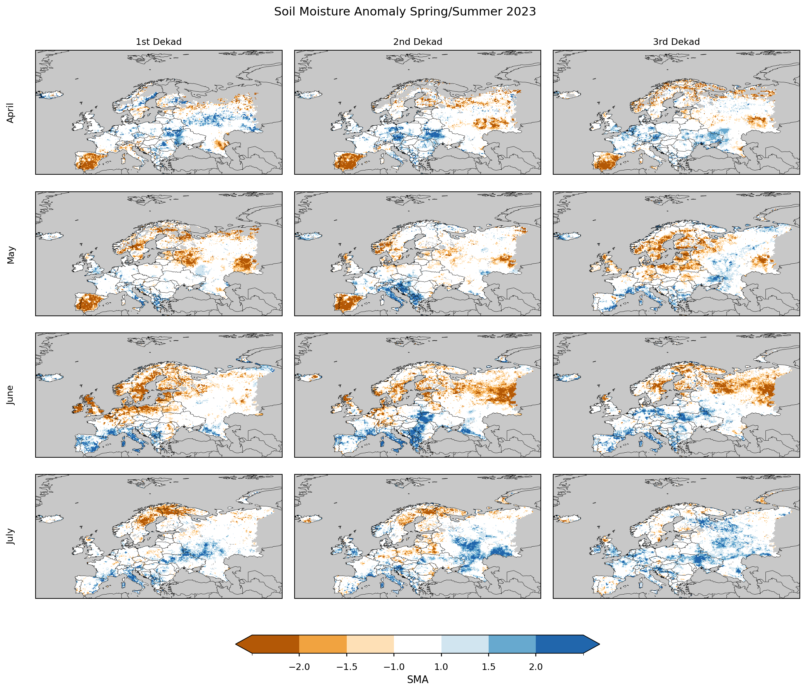
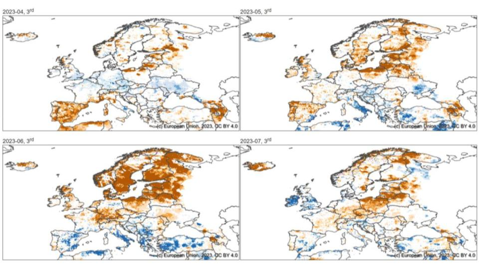

1.5.1. Satellite Soil Moisture Data for Extreme Event Analysis#
Production date: 22-Nov-2024
Produced by: Camila Trigoso (VUB)
🌍 Use case: Soil moisture anomalies to detect drought periods#
❓ Quality assessment question(s)#
Can satellite soil moisture data be used to detect the historically reported drought of 2003 in Europe?
The satellite soil-moisture dataset in the Climate Data Store (CDS) provides a key indicator for detecting agricultural drought. The dataset includes data from 1978 for volumetric surface soil moisture using combined active and passive sensors, and from 1991 for surface soil moisture in percentage using active sensors. The long temporal coverage enables the calculation of soil moisture anomalies (SMA) for specific periods, comparing soil moisture values of a given year with historical averages for the same period [1].
The objective of this study is to assess whether the CDS satellite soil-moisture dataset is suitable for detecting soil moisture anomalies during drought periods. To achieve this, we analyze the 2023 spring/summer drought in Europe as a case study and compare the results to those published in the JRC Technical Report by Toreti, A., et al., 2023 [2].
📢 Quality assessment statement#
These are the key outcomes of this assessment
The CDS soil-moisture dataset (volumetric surface soil moisture) successfully captures major drought events.
Our results were mostly similar to the JDR Technical Report. However, some discrepancies were found.
The CDS soil-moisture dataset is a valuable resource for large-scale drought analysis but may require validation with in-situ data for localized studies to address its limitations in smaller spatial scales or areas with incomplete data.
📋 Methodology#
The analysis and results are organized in the following steps, which are detailed in the sections below:
Download satellite-soil-moisture data from 1992 to 2023. Choose the volumetric_surface_soil_moisture variable and 10_day_average time agregation.
2. Calculate the Soil Moisture Anomaly (SMA)
Extract soil moisture data in Europe.
Calculate the dekad mean and standard deviation for the long-term period 1992 to 2022.
Extract 2023 data into a separate set.
Calculate the SMA for 2023 in relation to the long-term period data.
3. Plot the results and compare
Plot the SMA results for the months that can be compared with literature.
Analyze and compare the results.
📈 Analysis and results#
1. Request and download data#
Import packages#
Show code cell source
import xarray as xr
import numpy as np
import fsspec
import os
import geopandas
import pandas as pd
import matplotlib.pyplot as plt
from matplotlib.lines import Line2D
import matplotlib.colors as mcolors
import matplotlib.gridspec as gridspec
import shapely.geometry
import cartopy.crs as ccrs
import cartopy.feature as cfeature
from c3s_eqc_automatic_quality_control import download
import os
os.environ["CDSAPI_RC"] = os.path.expanduser("~/trigoso_camila/.cdsapirc")
plt.style.use("seaborn-v0_8-notebook")
Set variables#
Show code cell source
year_start = 1979
year_stop = 2023
shapefile_url = "https://figshare.com/ndownloader/files/23392280"
Set the data request#
Show code cell source
collection_id = "satellite-soil-moisture"
request = []
for year in range(year_start, year_stop + 1):
request.append(
{
"variable": "volumetric_surface_soil_moisture",
"type_of_sensor": "combined_passive_and_active",
"time_aggregation": "10_day_average",
"year": [str(year)],
"month": [f"{month:02d}" for month in range(1, 12 + 1)],
"day": ["01", "11", "21"],
"type_of_record": ["cdr" if year != 2023 else "icdr"],
"version": "v202212",
}
)
Download data#
Show code cell source
# Dataset
ds = download.download_and_transform(
collection_id,
request,
chunks={"year": 1},
transform_chunks=False,
)
# Shapefile
with fsspec.open(f"simplecache::{shapefile_url}") as file:
world_shape = geopandas.read_file(file)
0%| | 0/45 [00:00<?, ?it/s]2024-11-20 10:20:10,062 WARNING [2024-11-19T00:00:00] Issue with underlaying infrastructure is now solved. System should gradually recover. Please check updated status [here](https://status.ecmwf.int/)
2024-11-20 10:20:10,063 INFO [2024-09-28T00:00:00] **Welcome to the New Climate Data Store (CDS)!** This new system is in its early days of full operations and still undergoing enhancements and fine tuning. Some disruptions are to be expected. Your
[feedback](https://jira.ecmwf.int/plugins/servlet/desk/portal/1/create/202) is key to improve the user experience on the new CDS for the benefit of everyone. Thank you.
2024-11-20 10:20:10,064 INFO [2024-09-26T00:00:00] Watch our [Forum](https://forum.ecmwf.int/) for Announcements, news and other discussed topics.
2024-11-20 10:20:10,064 INFO [2024-09-16T00:00:00] Remember that you need to have an ECMWF account to use the new CDS. **Your old CDS credentials will not work in new CDS!**
2024-11-20 10:20:10,064 WARNING [2024-06-16T00:00:00] CDS API syntax is changed and some keys or parameter names may have also changed. To avoid requests failing, please use the "Show API request code" tool on the dataset Download Form to check you are using the correct syntax for your API request.
2024-11-20 10:20:10,546 WARNING [2024-11-19T00:00:00] Issue with underlaying infrastructure is now solved. System should gradually recover. Please check updated status [here](https://status.ecmwf.int/)
2024-11-20 10:20:10,547 INFO [2024-09-28T00:00:00] **Welcome to the New Climate Data Store (CDS)!** This new system is in its early days of full operations and still undergoing enhancements and fine tuning. Some disruptions are to be expected. Your
[feedback](https://jira.ecmwf.int/plugins/servlet/desk/portal/1/create/202) is key to improve the user experience on the new CDS for the benefit of everyone. Thank you.
2024-11-20 10:20:10,547 INFO [2024-09-26T00:00:00] Watch our [Forum](https://forum.ecmwf.int/) for Announcements, news and other discussed topics.
2024-11-20 10:20:10,547 INFO [2024-09-16T00:00:00] Remember that you need to have an ECMWF account to use the new CDS. **Your old CDS credentials will not work in new CDS!**
2024-11-20 10:20:10,548 WARNING [2024-06-16T00:00:00] CDS API syntax is changed and some keys or parameter names may have also changed. To avoid requests failing, please use the "Show API request code" tool on the dataset Download Form to check you are using the correct syntax for your API request.
2024-11-20 10:20:11,630 INFO Request ID is 862154f6-2d38-4a08-8b37-bbcb61f1e02b
2024-11-20 10:20:11,929 INFO status has been updated to accepted
2024-11-20 10:20:15,835 INFO status has been updated to running
2024-11-20 10:20:44,888 INFO status has been updated to successful
1a54727f883b86c92309dfb5f348f86b.zip: 0%| | 0.00/23.0M [00:00<?, ?B/s]
1a54727f883b86c92309dfb5f348f86b.zip: 9%|▊ | 2.00M/23.0M [00:00<00:01, 19.5MB/s]
1a54727f883b86c92309dfb5f348f86b.zip: 56%|█████▋ | 13.0M/23.0M [00:00<00:00, 71.1MB/s]
0%| | 0/36 [00:00<?, ?it/s]
2%|▏ | 1/45 [00:36<26:40, 36.37s/it]2024-11-20 10:20:46,742 WARNING [2024-11-19T00:00:00] Issue with underlaying infrastructure is now solved. System should gradually recover. Please check updated status [here](https://status.ecmwf.int/)
2024-11-20 10:20:46,742 INFO [2024-09-28T00:00:00] **Welcome to the New Climate Data Store (CDS)!** This new system is in its early days of full operations and still undergoing enhancements and fine tuning. Some disruptions are to be expected. Your
[feedback](https://jira.ecmwf.int/plugins/servlet/desk/portal/1/create/202) is key to improve the user experience on the new CDS for the benefit of everyone. Thank you.
2024-11-20 10:20:46,743 INFO [2024-09-26T00:00:00] Watch our [Forum](https://forum.ecmwf.int/) for Announcements, news and other discussed topics.
2024-11-20 10:20:46,743 INFO [2024-09-16T00:00:00] Remember that you need to have an ECMWF account to use the new CDS. **Your old CDS credentials will not work in new CDS!**
2024-11-20 10:20:46,743 WARNING [2024-06-16T00:00:00] CDS API syntax is changed and some keys or parameter names may have also changed. To avoid requests failing, please use the "Show API request code" tool on the dataset Download Form to check you are using the correct syntax for your API request.
2024-11-20 10:20:46,776 WARNING [2024-11-19T00:00:00] Issue with underlaying infrastructure is now solved. System should gradually recover. Please check updated status [here](https://status.ecmwf.int/)
2024-11-20 10:20:46,777 INFO [2024-09-28T00:00:00] **Welcome to the New Climate Data Store (CDS)!** This new system is in its early days of full operations and still undergoing enhancements and fine tuning. Some disruptions are to be expected. Your
[feedback](https://jira.ecmwf.int/plugins/servlet/desk/portal/1/create/202) is key to improve the user experience on the new CDS for the benefit of everyone. Thank you.
2024-11-20 10:20:46,777 INFO [2024-09-26T00:00:00] Watch our [Forum](https://forum.ecmwf.int/) for Announcements, news and other discussed topics.
2024-11-20 10:20:46,777 INFO [2024-09-16T00:00:00] Remember that you need to have an ECMWF account to use the new CDS. **Your old CDS credentials will not work in new CDS!**
2024-11-20 10:20:46,778 WARNING [2024-06-16T00:00:00] CDS API syntax is changed and some keys or parameter names may have also changed. To avoid requests failing, please use the "Show API request code" tool on the dataset Download Form to check you are using the correct syntax for your API request.
2024-11-20 10:20:46,947 INFO Request ID is 0ca878f3-46e0-456e-9b13-721e72061972
2024-11-20 10:20:46,983 INFO status has been updated to accepted
2024-11-20 10:20:50,885 INFO status has been updated to running
2024-11-20 10:21:18,598 INFO status has been updated to successful
2c8fe9e67432fb9998d01116c8ea4c5b.zip: 0%| | 0.00/22.9M [00:00<?, ?B/s]
2c8fe9e67432fb9998d01116c8ea4c5b.zip: 4%|▍ | 1.00M/22.9M [00:00<00:13, 1.75MB/s]
2c8fe9e67432fb9998d01116c8ea4c5b.zip: 48%|████▊ | 11.0M/22.9M [00:00<00:00, 21.4MB/s]
2c8fe9e67432fb9998d01116c8ea4c5b.zip: 92%|█████████▏| 21.0M/22.9M [00:00<00:00, 39.0MB/s]
0%| | 0/36 [00:00<?, ?it/s]
4%|▍ | 2/45 [01:12<25:56, 36.19s/it]2024-11-20 10:21:27,707 WARNING [2024-11-19T00:00:00] Issue with underlaying infrastructure is now solved. System should gradually recover. Please check updated status [here](https://status.ecmwf.int/)
2024-11-20 10:21:27,708 INFO [2024-09-28T00:00:00] **Welcome to the New Climate Data Store (CDS)!** This new system is in its early days of full operations and still undergoing enhancements and fine tuning. Some disruptions are to be expected. Your
[feedback](https://jira.ecmwf.int/plugins/servlet/desk/portal/1/create/202) is key to improve the user experience on the new CDS for the benefit of everyone. Thank you.
2024-11-20 10:21:27,708 INFO [2024-09-26T00:00:00] Watch our [Forum](https://forum.ecmwf.int/) for Announcements, news and other discussed topics.
2024-11-20 10:21:27,709 INFO [2024-09-16T00:00:00] Remember that you need to have an ECMWF account to use the new CDS. **Your old CDS credentials will not work in new CDS!**
2024-11-20 10:21:27,709 WARNING [2024-06-16T00:00:00] CDS API syntax is changed and some keys or parameter names may have also changed. To avoid requests failing, please use the "Show API request code" tool on the dataset Download Form to check you are using the correct syntax for your API request.
2024-11-20 10:21:27,729 WARNING [2024-11-19T00:00:00] Issue with underlaying infrastructure is now solved. System should gradually recover. Please check updated status [here](https://status.ecmwf.int/)
2024-11-20 10:21:27,730 INFO [2024-09-28T00:00:00] **Welcome to the New Climate Data Store (CDS)!** This new system is in its early days of full operations and still undergoing enhancements and fine tuning. Some disruptions are to be expected. Your
[feedback](https://jira.ecmwf.int/plugins/servlet/desk/portal/1/create/202) is key to improve the user experience on the new CDS for the benefit of everyone. Thank you.
2024-11-20 10:21:27,730 INFO [2024-09-26T00:00:00] Watch our [Forum](https://forum.ecmwf.int/) for Announcements, news and other discussed topics.
2024-11-20 10:21:27,730 INFO [2024-09-16T00:00:00] Remember that you need to have an ECMWF account to use the new CDS. **Your old CDS credentials will not work in new CDS!**
2024-11-20 10:21:27,731 WARNING [2024-06-16T00:00:00] CDS API syntax is changed and some keys or parameter names may have also changed. To avoid requests failing, please use the "Show API request code" tool on the dataset Download Form to check you are using the correct syntax for your API request.
2024-11-20 10:21:28,044 INFO Request ID is e79fdee6-9bde-42ea-ba88-e9df59d4b1bf
2024-11-20 10:21:29,388 INFO status has been updated to accepted
2024-11-20 10:21:33,658 INFO status has been updated to running
2024-11-20 10:22:01,495 INFO status has been updated to successful
4fcd7709246dc35e6bd8afe03d404deb.zip: 0%| | 0.00/23.2M [00:00<?, ?B/s]
4fcd7709246dc35e6bd8afe03d404deb.zip: 13%|█▎ | 3.00M/23.2M [00:00<00:00, 30.1MB/s]
4fcd7709246dc35e6bd8afe03d404deb.zip: 52%|█████▏ | 12.0M/23.2M [00:00<00:00, 63.6MB/s]
4fcd7709246dc35e6bd8afe03d404deb.zip: 86%|████████▋ | 20.0M/23.2M [00:00<00:00, 71.9MB/s]
0%| | 0/36 [00:00<?, ?it/s]
7%|▋ | 3/45 [01:52<26:43, 38.18s/it]2024-11-20 10:22:02,999 WARNING [2024-11-19T00:00:00] Issue with underlaying infrastructure is now solved. System should gradually recover. Please check updated status [here](https://status.ecmwf.int/)
2024-11-20 10:22:02,999 INFO [2024-09-28T00:00:00] **Welcome to the New Climate Data Store (CDS)!** This new system is in its early days of full operations and still undergoing enhancements and fine tuning. Some disruptions are to be expected. Your
[feedback](https://jira.ecmwf.int/plugins/servlet/desk/portal/1/create/202) is key to improve the user experience on the new CDS for the benefit of everyone. Thank you.
2024-11-20 10:22:03,000 INFO [2024-09-26T00:00:00] Watch our [Forum](https://forum.ecmwf.int/) for Announcements, news and other discussed topics.
2024-11-20 10:22:03,001 INFO [2024-09-16T00:00:00] Remember that you need to have an ECMWF account to use the new CDS. **Your old CDS credentials will not work in new CDS!**
2024-11-20 10:22:03,001 WARNING [2024-06-16T00:00:00] CDS API syntax is changed and some keys or parameter names may have also changed. To avoid requests failing, please use the "Show API request code" tool on the dataset Download Form to check you are using the correct syntax for your API request.
2024-11-20 10:22:03,193 WARNING [2024-11-19T00:00:00] Issue with underlaying infrastructure is now solved. System should gradually recover. Please check updated status [here](https://status.ecmwf.int/)
2024-11-20 10:22:03,194 INFO [2024-09-28T00:00:00] **Welcome to the New Climate Data Store (CDS)!** This new system is in its early days of full operations and still undergoing enhancements and fine tuning. Some disruptions are to be expected. Your
[feedback](https://jira.ecmwf.int/plugins/servlet/desk/portal/1/create/202) is key to improve the user experience on the new CDS for the benefit of everyone. Thank you.
2024-11-20 10:22:03,194 INFO [2024-09-26T00:00:00] Watch our [Forum](https://forum.ecmwf.int/) for Announcements, news and other discussed topics.
2024-11-20 10:22:03,195 INFO [2024-09-16T00:00:00] Remember that you need to have an ECMWF account to use the new CDS. **Your old CDS credentials will not work in new CDS!**
2024-11-20 10:22:03,195 WARNING [2024-06-16T00:00:00] CDS API syntax is changed and some keys or parameter names may have also changed. To avoid requests failing, please use the "Show API request code" tool on the dataset Download Form to check you are using the correct syntax for your API request.
2024-11-20 10:22:03,399 INFO Request ID is c061bc34-acfa-4c77-979c-0ba916de31c0
2024-11-20 10:22:05,577 INFO status has been updated to running
2024-11-20 10:22:37,284 INFO status has been updated to successful
3c6551926e8e1619867bc14e3ab72888.zip: 0%| | 0.00/23.0M [00:00<?, ?B/s]
3c6551926e8e1619867bc14e3ab72888.zip: 4%|▍ | 1.00M/23.0M [00:00<00:02, 9.70MB/s]
3c6551926e8e1619867bc14e3ab72888.zip: 39%|███▉ | 9.00M/23.0M [00:00<00:00, 49.9MB/s]
3c6551926e8e1619867bc14e3ab72888.zip: 83%|████████▎ | 19.0M/23.0M [00:00<00:00, 70.6MB/s]
0%| | 0/36 [00:00<?, ?it/s]
9%|▉ | 4/45 [02:28<25:28, 37.27s/it]2024-11-20 10:22:38,888 WARNING [2024-11-19T00:00:00] Issue with underlaying infrastructure is now solved. System should gradually recover. Please check updated status [here](https://status.ecmwf.int/)
2024-11-20 10:22:38,889 INFO [2024-09-28T00:00:00] **Welcome to the New Climate Data Store (CDS)!** This new system is in its early days of full operations and still undergoing enhancements and fine tuning. Some disruptions are to be expected. Your
[feedback](https://jira.ecmwf.int/plugins/servlet/desk/portal/1/create/202) is key to improve the user experience on the new CDS for the benefit of everyone. Thank you.
2024-11-20 10:22:38,889 INFO [2024-09-26T00:00:00] Watch our [Forum](https://forum.ecmwf.int/) for Announcements, news and other discussed topics.
2024-11-20 10:22:38,890 INFO [2024-09-16T00:00:00] Remember that you need to have an ECMWF account to use the new CDS. **Your old CDS credentials will not work in new CDS!**
2024-11-20 10:22:38,890 WARNING [2024-06-16T00:00:00] CDS API syntax is changed and some keys or parameter names may have also changed. To avoid requests failing, please use the "Show API request code" tool on the dataset Download Form to check you are using the correct syntax for your API request.
2024-11-20 10:22:38,937 WARNING [2024-11-19T00:00:00] Issue with underlaying infrastructure is now solved. System should gradually recover. Please check updated status [here](https://status.ecmwf.int/)
2024-11-20 10:22:38,938 INFO [2024-09-28T00:00:00] **Welcome to the New Climate Data Store (CDS)!** This new system is in its early days of full operations and still undergoing enhancements and fine tuning. Some disruptions are to be expected. Your
[feedback](https://jira.ecmwf.int/plugins/servlet/desk/portal/1/create/202) is key to improve the user experience on the new CDS for the benefit of everyone. Thank you.
2024-11-20 10:22:38,938 INFO [2024-09-26T00:00:00] Watch our [Forum](https://forum.ecmwf.int/) for Announcements, news and other discussed topics.
2024-11-20 10:22:38,938 INFO [2024-09-16T00:00:00] Remember that you need to have an ECMWF account to use the new CDS. **Your old CDS credentials will not work in new CDS!**
2024-11-20 10:22:38,939 WARNING [2024-06-16T00:00:00] CDS API syntax is changed and some keys or parameter names may have also changed. To avoid requests failing, please use the "Show API request code" tool on the dataset Download Form to check you are using the correct syntax for your API request.
2024-11-20 10:22:39,295 INFO Request ID is 665f1914-720f-4c23-b68d-a47c5b4b7298
2024-11-20 10:22:39,310 INFO status has been updated to accepted
2024-11-20 10:22:40,826 INFO status has been updated to running
Recovering from connection error [('Connection aborted.', RemoteDisconnected('Remote end closed connection without response'))], attemps 1 of 500
Retrying in 120 seconds
Recovering from connection error [HTTPSConnectionPool(host='cds.climate.copernicus.eu', port=443): Max retries exceeded with url: /api/retrieve/v1/jobs/665f1914-720f-4c23-b68d-a47c5b4b7298?log=True&request=True (Caused by ConnectTimeoutError(<urllib3.connection.HTTPSConnection object at 0x7f3b499bf590>, 'Connection to cds.climate.copernicus.eu timed out. (connect timeout=60)'))], attemps 2 of 500
Retrying in 120 seconds
2024-11-20 10:28:42,635 INFO status has been updated to successful
65098f15db1b1a98110030e28ff3da3d.zip: 0%| | 0.00/23.3M [00:00<?, ?B/s]
65098f15db1b1a98110030e28ff3da3d.zip: 21%|██▏ | 5.00M/23.3M [00:00<00:00, 40.1MB/s]
65098f15db1b1a98110030e28ff3da3d.zip: 60%|██████ | 14.0M/23.3M [00:00<00:00, 66.9MB/s]
0%| | 0/36 [00:00<?, ?it/s]
11%|█ | 5/45 [08:34<1:43:42, 155.57s/it]2024-11-20 10:28:44,292 WARNING [2024-11-19T00:00:00] Issue with underlaying infrastructure is now solved. System should gradually recover. Please check updated status [here](https://status.ecmwf.int/)
2024-11-20 10:28:44,293 INFO [2024-09-28T00:00:00] **Welcome to the New Climate Data Store (CDS)!** This new system is in its early days of full operations and still undergoing enhancements and fine tuning. Some disruptions are to be expected. Your
[feedback](https://jira.ecmwf.int/plugins/servlet/desk/portal/1/create/202) is key to improve the user experience on the new CDS for the benefit of everyone. Thank you.
2024-11-20 10:28:44,293 INFO [2024-09-26T00:00:00] Watch our [Forum](https://forum.ecmwf.int/) for Announcements, news and other discussed topics.
2024-11-20 10:28:44,293 INFO [2024-09-16T00:00:00] Remember that you need to have an ECMWF account to use the new CDS. **Your old CDS credentials will not work in new CDS!**
2024-11-20 10:28:44,294 WARNING [2024-06-16T00:00:00] CDS API syntax is changed and some keys or parameter names may have also changed. To avoid requests failing, please use the "Show API request code" tool on the dataset Download Form to check you are using the correct syntax for your API request.
2024-11-20 10:28:49,454 WARNING [2024-11-19T00:00:00] Issue with underlaying infrastructure is now solved. System should gradually recover. Please check updated status [here](https://status.ecmwf.int/)
2024-11-20 10:28:49,455 INFO [2024-09-28T00:00:00] **Welcome to the New Climate Data Store (CDS)!** This new system is in its early days of full operations and still undergoing enhancements and fine tuning. Some disruptions are to be expected. Your
[feedback](https://jira.ecmwf.int/plugins/servlet/desk/portal/1/create/202) is key to improve the user experience on the new CDS for the benefit of everyone. Thank you.
2024-11-20 10:28:49,455 INFO [2024-09-26T00:00:00] Watch our [Forum](https://forum.ecmwf.int/) for Announcements, news and other discussed topics.
2024-11-20 10:28:49,455 INFO [2024-09-16T00:00:00] Remember that you need to have an ECMWF account to use the new CDS. **Your old CDS credentials will not work in new CDS!**
2024-11-20 10:28:49,456 WARNING [2024-06-16T00:00:00] CDS API syntax is changed and some keys or parameter names may have also changed. To avoid requests failing, please use the "Show API request code" tool on the dataset Download Form to check you are using the correct syntax for your API request.
2024-11-20 10:28:49,573 INFO Request ID is c565b82a-8ee1-4573-b0da-a9fb00e32218
2024-11-20 10:28:49,595 INFO status has been updated to accepted
2024-11-20 10:28:53,433 INFO status has been updated to running
2024-11-20 10:29:21,671 INFO status has been updated to successful
cbaddfe5adaa394e95576891dd7b9e0a.zip: 0%| | 0.00/22.8M [00:00<?, ?B/s]
cbaddfe5adaa394e95576891dd7b9e0a.zip: 22%|██▏ | 5.00M/22.8M [00:00<00:00, 46.9MB/s]
cbaddfe5adaa394e95576891dd7b9e0a.zip: 44%|████▍ | 10.0M/22.8M [00:00<00:00, 46.9MB/s]
cbaddfe5adaa394e95576891dd7b9e0a.zip: 88%|████████▊ | 20.0M/22.8M [00:00<00:00, 70.7MB/s]
0%| | 0/36 [00:00<?, ?it/s]
13%|█▎ | 6/45 [09:15<1:15:48, 116.62s/it]2024-11-20 10:29:25,272 WARNING [2024-11-19T00:00:00] Issue with underlaying infrastructure is now solved. System should gradually recover. Please check updated status [here](https://status.ecmwf.int/)
2024-11-20 10:29:25,273 INFO [2024-09-28T00:00:00] **Welcome to the New Climate Data Store (CDS)!** This new system is in its early days of full operations and still undergoing enhancements and fine tuning. Some disruptions are to be expected. Your
[feedback](https://jira.ecmwf.int/plugins/servlet/desk/portal/1/create/202) is key to improve the user experience on the new CDS for the benefit of everyone. Thank you.
2024-11-20 10:29:25,273 INFO [2024-09-26T00:00:00] Watch our [Forum](https://forum.ecmwf.int/) for Announcements, news and other discussed topics.
2024-11-20 10:29:25,274 INFO [2024-09-16T00:00:00] Remember that you need to have an ECMWF account to use the new CDS. **Your old CDS credentials will not work in new CDS!**
2024-11-20 10:29:25,274 WARNING [2024-06-16T00:00:00] CDS API syntax is changed and some keys or parameter names may have also changed. To avoid requests failing, please use the "Show API request code" tool on the dataset Download Form to check you are using the correct syntax for your API request.
2024-11-20 10:29:25,304 WARNING [2024-11-19T00:00:00] Issue with underlaying infrastructure is now solved. System should gradually recover. Please check updated status [here](https://status.ecmwf.int/)
2024-11-20 10:29:25,304 INFO [2024-09-28T00:00:00] **Welcome to the New Climate Data Store (CDS)!** This new system is in its early days of full operations and still undergoing enhancements and fine tuning. Some disruptions are to be expected. Your
[feedback](https://jira.ecmwf.int/plugins/servlet/desk/portal/1/create/202) is key to improve the user experience on the new CDS for the benefit of everyone. Thank you.
2024-11-20 10:29:25,305 INFO [2024-09-26T00:00:00] Watch our [Forum](https://forum.ecmwf.int/) for Announcements, news and other discussed topics.
2024-11-20 10:29:25,305 INFO [2024-09-16T00:00:00] Remember that you need to have an ECMWF account to use the new CDS. **Your old CDS credentials will not work in new CDS!**
2024-11-20 10:29:25,305 WARNING [2024-06-16T00:00:00] CDS API syntax is changed and some keys or parameter names may have also changed. To avoid requests failing, please use the "Show API request code" tool on the dataset Download Form to check you are using the correct syntax for your API request.
2024-11-20 10:29:25,562 INFO Request ID is 33335ddf-af2b-44e5-9561-d3e62f7c33fb
2024-11-20 10:29:27,975 INFO status has been updated to accepted
2024-11-20 10:29:31,070 INFO status has been updated to running
2024-11-20 10:29:50,898 INFO status has been updated to successful
61238317c492f5b13d8486857ed0fbe9.zip: 0%| | 0.00/23.2M [00:00<?, ?B/s]
61238317c492f5b13d8486857ed0fbe9.zip: 17%|█▋ | 4.00M/23.2M [00:00<00:00, 39.1MB/s]
61238317c492f5b13d8486857ed0fbe9.zip: 60%|██████ | 14.0M/23.2M [00:00<00:00, 71.6MB/s]
0%| | 0/36 [00:00<?, ?it/s]
16%|█▌ | 7/45 [09:42<55:20, 87.39s/it] 2024-11-20 10:29:52,494 WARNING [2024-11-19T00:00:00] Issue with underlaying infrastructure is now solved. System should gradually recover. Please check updated status [here](https://status.ecmwf.int/)
2024-11-20 10:29:52,495 INFO [2024-09-28T00:00:00] **Welcome to the New Climate Data Store (CDS)!** This new system is in its early days of full operations and still undergoing enhancements and fine tuning. Some disruptions are to be expected. Your
[feedback](https://jira.ecmwf.int/plugins/servlet/desk/portal/1/create/202) is key to improve the user experience on the new CDS for the benefit of everyone. Thank you.
2024-11-20 10:29:52,495 INFO [2024-09-26T00:00:00] Watch our [Forum](https://forum.ecmwf.int/) for Announcements, news and other discussed topics.
2024-11-20 10:29:52,496 INFO [2024-09-16T00:00:00] Remember that you need to have an ECMWF account to use the new CDS. **Your old CDS credentials will not work in new CDS!**
2024-11-20 10:29:52,496 WARNING [2024-06-16T00:00:00] CDS API syntax is changed and some keys or parameter names may have also changed. To avoid requests failing, please use the "Show API request code" tool on the dataset Download Form to check you are using the correct syntax for your API request.
2024-11-20 10:29:52,534 WARNING [2024-11-19T00:00:00] Issue with underlaying infrastructure is now solved. System should gradually recover. Please check updated status [here](https://status.ecmwf.int/)
2024-11-20 10:29:52,534 INFO [2024-09-28T00:00:00] **Welcome to the New Climate Data Store (CDS)!** This new system is in its early days of full operations and still undergoing enhancements and fine tuning. Some disruptions are to be expected. Your
[feedback](https://jira.ecmwf.int/plugins/servlet/desk/portal/1/create/202) is key to improve the user experience on the new CDS for the benefit of everyone. Thank you.
2024-11-20 10:29:52,535 INFO [2024-09-26T00:00:00] Watch our [Forum](https://forum.ecmwf.int/) for Announcements, news and other discussed topics.
2024-11-20 10:29:52,535 INFO [2024-09-16T00:00:00] Remember that you need to have an ECMWF account to use the new CDS. **Your old CDS credentials will not work in new CDS!**
2024-11-20 10:29:52,535 WARNING [2024-06-16T00:00:00] CDS API syntax is changed and some keys or parameter names may have also changed. To avoid requests failing, please use the "Show API request code" tool on the dataset Download Form to check you are using the correct syntax for your API request.
2024-11-20 10:29:52,802 INFO Request ID is 33ddab43-7a8a-4d47-a305-52d9eff86c14
2024-11-20 10:29:52,882 INFO status has been updated to accepted
2024-11-20 10:29:56,680 INFO status has been updated to running
2024-11-20 10:30:24,848 INFO status has been updated to successful
63a9bb81d3b012041ceab5da6f60c2f4.zip: 0%| | 0.00/21.2M [00:00<?, ?B/s]
63a9bb81d3b012041ceab5da6f60c2f4.zip: 5%|▍ | 1.00M/21.2M [00:00<00:12, 1.68MB/s]
63a9bb81d3b012041ceab5da6f60c2f4.zip: 9%|▉ | 2.00M/21.2M [00:00<00:06, 3.16MB/s]
63a9bb81d3b012041ceab5da6f60c2f4.zip: 14%|█▍ | 3.00M/21.2M [00:00<00:04, 4.41MB/s]
63a9bb81d3b012041ceab5da6f60c2f4.zip: 19%|█▉ | 4.00M/21.2M [00:01<00:03, 5.36MB/s]
63a9bb81d3b012041ceab5da6f60c2f4.zip: 24%|██▎ | 5.00M/21.2M [00:01<00:02, 6.16MB/s]
63a9bb81d3b012041ceab5da6f60c2f4.zip: 38%|███▊ | 8.00M/21.2M [00:01<00:01, 11.8MB/s]
63a9bb81d3b012041ceab5da6f60c2f4.zip: 89%|████████▉ | 19.0M/21.2M [00:01<00:00, 36.7MB/s]
0%| | 0/36 [00:00<?, ?it/s]
18%|█▊ | 8/45 [10:20<44:11, 71.67s/it]2024-11-20 10:30:30,581 WARNING [2024-11-19T00:00:00] Issue with underlaying infrastructure is now solved. System should gradually recover. Please check updated status [here](https://status.ecmwf.int/)
2024-11-20 10:30:30,582 INFO [2024-09-28T00:00:00] **Welcome to the New Climate Data Store (CDS)!** This new system is in its early days of full operations and still undergoing enhancements and fine tuning. Some disruptions are to be expected. Your
[feedback](https://jira.ecmwf.int/plugins/servlet/desk/portal/1/create/202) is key to improve the user experience on the new CDS for the benefit of everyone. Thank you.
2024-11-20 10:30:30,582 INFO [2024-09-26T00:00:00] Watch our [Forum](https://forum.ecmwf.int/) for Announcements, news and other discussed topics.
2024-11-20 10:30:30,583 INFO [2024-09-16T00:00:00] Remember that you need to have an ECMWF account to use the new CDS. **Your old CDS credentials will not work in new CDS!**
2024-11-20 10:30:30,583 WARNING [2024-06-16T00:00:00] CDS API syntax is changed and some keys or parameter names may have also changed. To avoid requests failing, please use the "Show API request code" tool on the dataset Download Form to check you are using the correct syntax for your API request.
2024-11-20 10:30:30,667 WARNING [2024-11-19T00:00:00] Issue with underlaying infrastructure is now solved. System should gradually recover. Please check updated status [here](https://status.ecmwf.int/)
2024-11-20 10:30:30,668 INFO [2024-09-28T00:00:00] **Welcome to the New Climate Data Store (CDS)!** This new system is in its early days of full operations and still undergoing enhancements and fine tuning. Some disruptions are to be expected. Your
[feedback](https://jira.ecmwf.int/plugins/servlet/desk/portal/1/create/202) is key to improve the user experience on the new CDS for the benefit of everyone. Thank you.
2024-11-20 10:30:30,668 INFO [2024-09-26T00:00:00] Watch our [Forum](https://forum.ecmwf.int/) for Announcements, news and other discussed topics.
2024-11-20 10:30:30,668 INFO [2024-09-16T00:00:00] Remember that you need to have an ECMWF account to use the new CDS. **Your old CDS credentials will not work in new CDS!**
2024-11-20 10:30:30,669 WARNING [2024-06-16T00:00:00] CDS API syntax is changed and some keys or parameter names may have also changed. To avoid requests failing, please use the "Show API request code" tool on the dataset Download Form to check you are using the correct syntax for your API request.
2024-11-20 10:30:31,401 INFO Request ID is 8583d552-d091-418c-9013-fffa61fb52d8
2024-11-20 10:30:31,503 INFO status has been updated to accepted
2024-11-20 10:30:35,709 INFO status has been updated to running
2024-11-20 10:30:55,236 INFO status has been updated to successful
7775448c4cf4060f06ef315f2129bf3e.zip: 0%| | 0.00/21.9M [00:00<?, ?B/s]
7775448c4cf4060f06ef315f2129bf3e.zip: 18%|█▊ | 4.00M/21.9M [00:00<00:00, 38.6MB/s]
7775448c4cf4060f06ef315f2129bf3e.zip: 64%|██████▍ | 14.0M/21.9M [00:00<00:00, 75.6MB/s]
0%| | 0/36 [00:00<?, ?it/s]
20%|██ | 9/45 [10:46<34:27, 57.44s/it]2024-11-20 10:30:56,667 WARNING [2024-11-19T00:00:00] Issue with underlaying infrastructure is now solved. System should gradually recover. Please check updated status [here](https://status.ecmwf.int/)
2024-11-20 10:30:56,668 INFO [2024-09-28T00:00:00] **Welcome to the New Climate Data Store (CDS)!** This new system is in its early days of full operations and still undergoing enhancements and fine tuning. Some disruptions are to be expected. Your
[feedback](https://jira.ecmwf.int/plugins/servlet/desk/portal/1/create/202) is key to improve the user experience on the new CDS for the benefit of everyone. Thank you.
2024-11-20 10:30:56,668 INFO [2024-09-26T00:00:00] Watch our [Forum](https://forum.ecmwf.int/) for Announcements, news and other discussed topics.
2024-11-20 10:30:56,669 INFO [2024-09-16T00:00:00] Remember that you need to have an ECMWF account to use the new CDS. **Your old CDS credentials will not work in new CDS!**
2024-11-20 10:30:56,669 WARNING [2024-06-16T00:00:00] CDS API syntax is changed and some keys or parameter names may have also changed. To avoid requests failing, please use the "Show API request code" tool on the dataset Download Form to check you are using the correct syntax for your API request.
2024-11-20 10:30:56,911 WARNING [2024-11-19T00:00:00] Issue with underlaying infrastructure is now solved. System should gradually recover. Please check updated status [here](https://status.ecmwf.int/)
2024-11-20 10:30:56,912 INFO [2024-09-28T00:00:00] **Welcome to the New Climate Data Store (CDS)!** This new system is in its early days of full operations and still undergoing enhancements and fine tuning. Some disruptions are to be expected. Your
[feedback](https://jira.ecmwf.int/plugins/servlet/desk/portal/1/create/202) is key to improve the user experience on the new CDS for the benefit of everyone. Thank you.
2024-11-20 10:30:56,912 INFO [2024-09-26T00:00:00] Watch our [Forum](https://forum.ecmwf.int/) for Announcements, news and other discussed topics.
2024-11-20 10:30:56,913 INFO [2024-09-16T00:00:00] Remember that you need to have an ECMWF account to use the new CDS. **Your old CDS credentials will not work in new CDS!**
2024-11-20 10:30:56,913 WARNING [2024-06-16T00:00:00] CDS API syntax is changed and some keys or parameter names may have also changed. To avoid requests failing, please use the "Show API request code" tool on the dataset Download Form to check you are using the correct syntax for your API request.
2024-11-20 10:30:57,301 INFO Request ID is 370d44da-b90d-4dc0-922f-c6ff065e4cc3
2024-11-20 10:30:57,442 INFO status has been updated to accepted
2024-11-20 10:31:01,340 INFO status has been updated to running
2024-11-20 10:31:29,384 INFO status has been updated to successful
3be8ad2d9e981d327cdeff4fe8d7fcc9.zip: 0%| | 0.00/22.6M [00:00<?, ?B/s]
3be8ad2d9e981d327cdeff4fe8d7fcc9.zip: 4%|▍ | 1.00M/22.6M [00:00<00:05, 4.30MB/s]
3be8ad2d9e981d327cdeff4fe8d7fcc9.zip: 40%|███▉ | 9.00M/22.6M [00:00<00:00, 33.2MB/s]
3be8ad2d9e981d327cdeff4fe8d7fcc9.zip: 84%|████████▍ | 19.0M/22.6M [00:00<00:00, 56.7MB/s]
0%| | 0/36 [00:00<?, ?it/s]
22%|██▏ | 10/45 [11:21<29:24, 50.42s/it]2024-11-20 10:31:31,370 WARNING [2024-11-19T00:00:00] Issue with underlaying infrastructure is now solved. System should gradually recover. Please check updated status [here](https://status.ecmwf.int/)
2024-11-20 10:31:31,371 INFO [2024-09-28T00:00:00] **Welcome to the New Climate Data Store (CDS)!** This new system is in its early days of full operations and still undergoing enhancements and fine tuning. Some disruptions are to be expected. Your
[feedback](https://jira.ecmwf.int/plugins/servlet/desk/portal/1/create/202) is key to improve the user experience on the new CDS for the benefit of everyone. Thank you.
2024-11-20 10:31:31,371 INFO [2024-09-26T00:00:00] Watch our [Forum](https://forum.ecmwf.int/) for Announcements, news and other discussed topics.
2024-11-20 10:31:31,371 INFO [2024-09-16T00:00:00] Remember that you need to have an ECMWF account to use the new CDS. **Your old CDS credentials will not work in new CDS!**
2024-11-20 10:31:31,372 WARNING [2024-06-16T00:00:00] CDS API syntax is changed and some keys or parameter names may have also changed. To avoid requests failing, please use the "Show API request code" tool on the dataset Download Form to check you are using the correct syntax for your API request.
2024-11-20 10:31:31,585 WARNING [2024-11-19T00:00:00] Issue with underlaying infrastructure is now solved. System should gradually recover. Please check updated status [here](https://status.ecmwf.int/)
2024-11-20 10:31:31,586 INFO [2024-09-28T00:00:00] **Welcome to the New Climate Data Store (CDS)!** This new system is in its early days of full operations and still undergoing enhancements and fine tuning. Some disruptions are to be expected. Your
[feedback](https://jira.ecmwf.int/plugins/servlet/desk/portal/1/create/202) is key to improve the user experience on the new CDS for the benefit of everyone. Thank you.
2024-11-20 10:31:31,586 INFO [2024-09-26T00:00:00] Watch our [Forum](https://forum.ecmwf.int/) for Announcements, news and other discussed topics.
2024-11-20 10:31:31,587 INFO [2024-09-16T00:00:00] Remember that you need to have an ECMWF account to use the new CDS. **Your old CDS credentials will not work in new CDS!**
2024-11-20 10:31:31,587 WARNING [2024-06-16T00:00:00] CDS API syntax is changed and some keys or parameter names may have also changed. To avoid requests failing, please use the "Show API request code" tool on the dataset Download Form to check you are using the correct syntax for your API request.
2024-11-20 10:31:31,871 INFO Request ID is 3e0417e0-e3c3-490f-ab2a-80c9380a92dd
2024-11-20 10:31:31,957 INFO status has been updated to accepted
2024-11-20 10:31:35,949 INFO status has been updated to running
2024-11-20 10:32:03,703 INFO status has been updated to successful
387546492b0aa87e08b56a2d5b7b1714.zip: 0%| | 0.00/23.0M [00:00<?, ?B/s]
387546492b0aa87e08b56a2d5b7b1714.zip: 9%|▊ | 2.00M/23.0M [00:00<00:01, 19.4MB/s]
387546492b0aa87e08b56a2d5b7b1714.zip: 30%|███ | 7.00M/23.0M [00:00<00:00, 36.3MB/s]
387546492b0aa87e08b56a2d5b7b1714.zip: 57%|█████▋ | 13.0M/23.0M [00:00<00:00, 44.4MB/s]
387546492b0aa87e08b56a2d5b7b1714.zip: 78%|███████▊ | 18.0M/23.0M [00:00<00:00, 47.1MB/s]
387546492b0aa87e08b56a2d5b7b1714.zip: 100%|██████████| 23.0M/23.0M [00:00<00:00, 47.3MB/s]
0%| | 0/36 [00:00<?, ?it/s]
24%|██▍ | 11/45 [11:55<25:44, 45.44s/it]2024-11-20 10:32:05,537 WARNING [2024-11-19T00:00:00] Issue with underlaying infrastructure is now solved. System should gradually recover. Please check updated status [here](https://status.ecmwf.int/)
2024-11-20 10:32:05,537 INFO [2024-09-28T00:00:00] **Welcome to the New Climate Data Store (CDS)!** This new system is in its early days of full operations and still undergoing enhancements and fine tuning. Some disruptions are to be expected. Your
[feedback](https://jira.ecmwf.int/plugins/servlet/desk/portal/1/create/202) is key to improve the user experience on the new CDS for the benefit of everyone. Thank you.
2024-11-20 10:32:05,538 INFO [2024-09-26T00:00:00] Watch our [Forum](https://forum.ecmwf.int/) for Announcements, news and other discussed topics.
2024-11-20 10:32:05,538 INFO [2024-09-16T00:00:00] Remember that you need to have an ECMWF account to use the new CDS. **Your old CDS credentials will not work in new CDS!**
2024-11-20 10:32:05,539 WARNING [2024-06-16T00:00:00] CDS API syntax is changed and some keys or parameter names may have also changed. To avoid requests failing, please use the "Show API request code" tool on the dataset Download Form to check you are using the correct syntax for your API request.
2024-11-20 10:32:05,700 WARNING [2024-11-19T00:00:00] Issue with underlaying infrastructure is now solved. System should gradually recover. Please check updated status [here](https://status.ecmwf.int/)
2024-11-20 10:32:05,701 INFO [2024-09-28T00:00:00] **Welcome to the New Climate Data Store (CDS)!** This new system is in its early days of full operations and still undergoing enhancements and fine tuning. Some disruptions are to be expected. Your
[feedback](https://jira.ecmwf.int/plugins/servlet/desk/portal/1/create/202) is key to improve the user experience on the new CDS for the benefit of everyone. Thank you.
2024-11-20 10:32:05,702 INFO [2024-09-26T00:00:00] Watch our [Forum](https://forum.ecmwf.int/) for Announcements, news and other discussed topics.
2024-11-20 10:32:05,702 INFO [2024-09-16T00:00:00] Remember that you need to have an ECMWF account to use the new CDS. **Your old CDS credentials will not work in new CDS!**
2024-11-20 10:32:05,702 WARNING [2024-06-16T00:00:00] CDS API syntax is changed and some keys or parameter names may have also changed. To avoid requests failing, please use the "Show API request code" tool on the dataset Download Form to check you are using the correct syntax for your API request.
2024-11-20 10:32:05,919 INFO Request ID is 92723a82-0ba1-43e7-9b58-d01837c5e992
2024-11-20 10:32:05,996 INFO status has been updated to accepted
2024-11-20 10:32:09,910 INFO status has been updated to running
2024-11-20 10:32:37,881 INFO status has been updated to successful
786982f3b669331447bfbabb98000bac.zip: 0%| | 0.00/23.1M [00:00<?, ?B/s]
786982f3b669331447bfbabb98000bac.zip: 4%|▍ | 1.00M/23.1M [00:00<00:05, 4.59MB/s]
786982f3b669331447bfbabb98000bac.zip: 17%|█▋ | 4.00M/23.1M [00:00<00:01, 13.0MB/s]
786982f3b669331447bfbabb98000bac.zip: 26%|██▌ | 6.00M/23.1M [00:00<00:01, 10.1MB/s]
786982f3b669331447bfbabb98000bac.zip: 35%|███▍ | 8.00M/23.1M [00:01<00:02, 6.55MB/s]
786982f3b669331447bfbabb98000bac.zip: 39%|███▉ | 9.00M/23.1M [00:01<00:02, 5.54MB/s]
786982f3b669331447bfbabb98000bac.zip: 43%|████▎ | 10.0M/23.1M [00:01<00:02, 5.57MB/s]
786982f3b669331447bfbabb98000bac.zip: 48%|████▊ | 11.0M/23.1M [00:01<00:02, 5.65MB/s]
786982f3b669331447bfbabb98000bac.zip: 61%|██████ | 14.0M/23.1M [00:01<00:01, 9.35MB/s]
786982f3b669331447bfbabb98000bac.zip: 69%|██████▉ | 16.0M/23.1M [00:02<00:00, 10.7MB/s]
786982f3b669331447bfbabb98000bac.zip: 82%|████████▏ | 19.0M/23.1M [00:02<00:00, 14.6MB/s]
786982f3b669331447bfbabb98000bac.zip: 95%|█████████▌| 22.0M/23.1M [00:02<00:00, 17.8MB/s]
0%| | 0/36 [00:00<?, ?it/s]
27%|██▋ | 12/45 [12:31<23:27, 42.65s/it]2024-11-20 10:32:41,674 WARNING [2024-11-19T00:00:00] Issue with underlaying infrastructure is now solved. System should gradually recover. Please check updated status [here](https://status.ecmwf.int/)
2024-11-20 10:32:41,674 INFO [2024-09-28T00:00:00] **Welcome to the New Climate Data Store (CDS)!** This new system is in its early days of full operations and still undergoing enhancements and fine tuning. Some disruptions are to be expected. Your
[feedback](https://jira.ecmwf.int/plugins/servlet/desk/portal/1/create/202) is key to improve the user experience on the new CDS for the benefit of everyone. Thank you.
2024-11-20 10:32:41,675 INFO [2024-09-26T00:00:00] Watch our [Forum](https://forum.ecmwf.int/) for Announcements, news and other discussed topics.
2024-11-20 10:32:41,675 INFO [2024-09-16T00:00:00] Remember that you need to have an ECMWF account to use the new CDS. **Your old CDS credentials will not work in new CDS!**
2024-11-20 10:32:41,676 WARNING [2024-06-16T00:00:00] CDS API syntax is changed and some keys or parameter names may have also changed. To avoid requests failing, please use the "Show API request code" tool on the dataset Download Form to check you are using the correct syntax for your API request.
2024-11-20 10:32:41,938 WARNING [2024-11-19T00:00:00] Issue with underlaying infrastructure is now solved. System should gradually recover. Please check updated status [here](https://status.ecmwf.int/)
2024-11-20 10:32:41,938 INFO [2024-09-28T00:00:00] **Welcome to the New Climate Data Store (CDS)!** This new system is in its early days of full operations and still undergoing enhancements and fine tuning. Some disruptions are to be expected. Your
[feedback](https://jira.ecmwf.int/plugins/servlet/desk/portal/1/create/202) is key to improve the user experience on the new CDS for the benefit of everyone. Thank you.
2024-11-20 10:32:41,939 INFO [2024-09-26T00:00:00] Watch our [Forum](https://forum.ecmwf.int/) for Announcements, news and other discussed topics.
2024-11-20 10:32:41,939 INFO [2024-09-16T00:00:00] Remember that you need to have an ECMWF account to use the new CDS. **Your old CDS credentials will not work in new CDS!**
2024-11-20 10:32:41,940 WARNING [2024-06-16T00:00:00] CDS API syntax is changed and some keys or parameter names may have also changed. To avoid requests failing, please use the "Show API request code" tool on the dataset Download Form to check you are using the correct syntax for your API request.
2024-11-20 10:32:42,302 INFO Request ID is 5c9350c3-c9cb-45bb-b6ab-d67176d6a1d8
2024-11-20 10:32:42,382 INFO status has been updated to accepted
2024-11-20 10:32:50,952 INFO status has been updated to running
2024-11-20 10:33:15,144 INFO status has been updated to successful
716e4c122217ba196e513736442fbd0f.zip: 0%| | 0.00/23.8M [00:00<?, ?B/s]
716e4c122217ba196e513736442fbd0f.zip: 21%|██ | 5.00M/23.8M [00:00<00:00, 51.6MB/s]
716e4c122217ba196e513736442fbd0f.zip: 63%|██████▎ | 15.0M/23.8M [00:00<00:00, 78.1MB/s]
0%| | 0/36 [00:00<?, ?it/s]
29%|██▉ | 13/45 [13:06<21:31, 40.37s/it]2024-11-20 10:33:17,070 WARNING [2024-11-19T00:00:00] Issue with underlaying infrastructure is now solved. System should gradually recover. Please check updated status [here](https://status.ecmwf.int/)
2024-11-20 10:33:17,070 INFO [2024-09-28T00:00:00] **Welcome to the New Climate Data Store (CDS)!** This new system is in its early days of full operations and still undergoing enhancements and fine tuning. Some disruptions are to be expected. Your
[feedback](https://jira.ecmwf.int/plugins/servlet/desk/portal/1/create/202) is key to improve the user experience on the new CDS for the benefit of everyone. Thank you.
2024-11-20 10:33:17,071 INFO [2024-09-26T00:00:00] Watch our [Forum](https://forum.ecmwf.int/) for Announcements, news and other discussed topics.
2024-11-20 10:33:17,071 INFO [2024-09-16T00:00:00] Remember that you need to have an ECMWF account to use the new CDS. **Your old CDS credentials will not work in new CDS!**
2024-11-20 10:33:17,072 WARNING [2024-06-16T00:00:00] CDS API syntax is changed and some keys or parameter names may have also changed. To avoid requests failing, please use the "Show API request code" tool on the dataset Download Form to check you are using the correct syntax for your API request.
2024-11-20 10:33:17,422 WARNING [2024-11-19T00:00:00] Issue with underlaying infrastructure is now solved. System should gradually recover. Please check updated status [here](https://status.ecmwf.int/)
2024-11-20 10:33:17,422 INFO [2024-09-28T00:00:00] **Welcome to the New Climate Data Store (CDS)!** This new system is in its early days of full operations and still undergoing enhancements and fine tuning. Some disruptions are to be expected. Your
[feedback](https://jira.ecmwf.int/plugins/servlet/desk/portal/1/create/202) is key to improve the user experience on the new CDS for the benefit of everyone. Thank you.
2024-11-20 10:33:17,423 INFO [2024-09-26T00:00:00] Watch our [Forum](https://forum.ecmwf.int/) for Announcements, news and other discussed topics.
2024-11-20 10:33:17,423 INFO [2024-09-16T00:00:00] Remember that you need to have an ECMWF account to use the new CDS. **Your old CDS credentials will not work in new CDS!**
2024-11-20 10:33:17,424 WARNING [2024-06-16T00:00:00] CDS API syntax is changed and some keys or parameter names may have also changed. To avoid requests failing, please use the "Show API request code" tool on the dataset Download Form to check you are using the correct syntax for your API request.
2024-11-20 10:33:17,699 INFO Request ID is 25932537-f71e-4b96-bc99-c61abec0efb7
2024-11-20 10:33:17,782 INFO status has been updated to accepted
2024-11-20 10:33:25,229 INFO status has been updated to running
2024-11-20 10:33:49,390 INFO status has been updated to successful
78309b7e2b01a0ddd90b4ed68e17c520.zip: 0%| | 0.00/26.1M [00:00<?, ?B/s]
78309b7e2b01a0ddd90b4ed68e17c520.zip: 19%|█▉ | 5.00M/26.1M [00:00<00:00, 35.1MB/s]
78309b7e2b01a0ddd90b4ed68e17c520.zip: 58%|█████▊ | 15.0M/26.1M [00:00<00:00, 68.8MB/s]
78309b7e2b01a0ddd90b4ed68e17c520.zip: 96%|█████████▌| 25.0M/26.1M [00:00<00:00, 83.0MB/s]
0%| | 0/36 [00:00<?, ?it/s]
31%|███ | 14/45 [13:40<19:53, 38.49s/it]2024-11-20 10:33:50,917 WARNING [2024-11-19T00:00:00] Issue with underlaying infrastructure is now solved. System should gradually recover. Please check updated status [here](https://status.ecmwf.int/)
2024-11-20 10:33:50,918 INFO [2024-09-28T00:00:00] **Welcome to the New Climate Data Store (CDS)!** This new system is in its early days of full operations and still undergoing enhancements and fine tuning. Some disruptions are to be expected. Your
[feedback](https://jira.ecmwf.int/plugins/servlet/desk/portal/1/create/202) is key to improve the user experience on the new CDS for the benefit of everyone. Thank you.
2024-11-20 10:33:50,918 INFO [2024-09-26T00:00:00] Watch our [Forum](https://forum.ecmwf.int/) for Announcements, news and other discussed topics.
2024-11-20 10:33:50,919 INFO [2024-09-16T00:00:00] Remember that you need to have an ECMWF account to use the new CDS. **Your old CDS credentials will not work in new CDS!**
2024-11-20 10:33:50,919 WARNING [2024-06-16T00:00:00] CDS API syntax is changed and some keys or parameter names may have also changed. To avoid requests failing, please use the "Show API request code" tool on the dataset Download Form to check you are using the correct syntax for your API request.
2024-11-20 10:33:50,974 WARNING [2024-11-19T00:00:00] Issue with underlaying infrastructure is now solved. System should gradually recover. Please check updated status [here](https://status.ecmwf.int/)
2024-11-20 10:33:50,974 INFO [2024-09-28T00:00:00] **Welcome to the New Climate Data Store (CDS)!** This new system is in its early days of full operations and still undergoing enhancements and fine tuning. Some disruptions are to be expected. Your
[feedback](https://jira.ecmwf.int/plugins/servlet/desk/portal/1/create/202) is key to improve the user experience on the new CDS for the benefit of everyone. Thank you.
2024-11-20 10:33:50,974 INFO [2024-09-26T00:00:00] Watch our [Forum](https://forum.ecmwf.int/) for Announcements, news and other discussed topics.
2024-11-20 10:33:50,975 INFO [2024-09-16T00:00:00] Remember that you need to have an ECMWF account to use the new CDS. **Your old CDS credentials will not work in new CDS!**
2024-11-20 10:33:50,975 WARNING [2024-06-16T00:00:00] CDS API syntax is changed and some keys or parameter names may have also changed. To avoid requests failing, please use the "Show API request code" tool on the dataset Download Form to check you are using the correct syntax for your API request.
2024-11-20 10:33:53,397 INFO Request ID is 7659343a-f3f8-4203-896c-9d052e22d00d
2024-11-20 10:33:53,412 INFO status has been updated to accepted
2024-11-20 10:33:57,502 INFO status has been updated to running
2024-11-20 10:34:25,266 INFO status has been updated to successful
eaae2b554205dc39708fab5487b9011c.zip: 0%| | 0.00/26.3M [00:00<?, ?B/s]
eaae2b554205dc39708fab5487b9011c.zip: 4%|▍ | 1.00M/26.3M [00:00<00:03, 8.75MB/s]
eaae2b554205dc39708fab5487b9011c.zip: 27%|██▋ | 7.00M/26.3M [00:00<00:00, 37.1MB/s]
eaae2b554205dc39708fab5487b9011c.zip: 65%|██████▍ | 17.0M/26.3M [00:00<00:00, 64.0MB/s]
eaae2b554205dc39708fab5487b9011c.zip: 99%|█████████▉| 26.0M/26.3M [00:00<00:00, 74.7MB/s]
0%| | 0/36 [00:00<?, ?it/s]
33%|███▎ | 15/45 [14:16<18:49, 37.66s/it]2024-11-20 10:34:26,760 WARNING [2024-11-19T00:00:00] Issue with underlaying infrastructure is now solved. System should gradually recover. Please check updated status [here](https://status.ecmwf.int/)
2024-11-20 10:34:26,761 INFO [2024-09-28T00:00:00] **Welcome to the New Climate Data Store (CDS)!** This new system is in its early days of full operations and still undergoing enhancements and fine tuning. Some disruptions are to be expected. Your
[feedback](https://jira.ecmwf.int/plugins/servlet/desk/portal/1/create/202) is key to improve the user experience on the new CDS for the benefit of everyone. Thank you.
2024-11-20 10:34:26,761 INFO [2024-09-26T00:00:00] Watch our [Forum](https://forum.ecmwf.int/) for Announcements, news and other discussed topics.
2024-11-20 10:34:26,761 INFO [2024-09-16T00:00:00] Remember that you need to have an ECMWF account to use the new CDS. **Your old CDS credentials will not work in new CDS!**
2024-11-20 10:34:26,762 WARNING [2024-06-16T00:00:00] CDS API syntax is changed and some keys or parameter names may have also changed. To avoid requests failing, please use the "Show API request code" tool on the dataset Download Form to check you are using the correct syntax for your API request.
2024-11-20 10:34:26,787 WARNING [2024-11-19T00:00:00] Issue with underlaying infrastructure is now solved. System should gradually recover. Please check updated status [here](https://status.ecmwf.int/)
2024-11-20 10:34:26,788 INFO [2024-09-28T00:00:00] **Welcome to the New Climate Data Store (CDS)!** This new system is in its early days of full operations and still undergoing enhancements and fine tuning. Some disruptions are to be expected. Your
[feedback](https://jira.ecmwf.int/plugins/servlet/desk/portal/1/create/202) is key to improve the user experience on the new CDS for the benefit of everyone. Thank you.
2024-11-20 10:34:26,788 INFO [2024-09-26T00:00:00] Watch our [Forum](https://forum.ecmwf.int/) for Announcements, news and other discussed topics.
2024-11-20 10:34:26,789 INFO [2024-09-16T00:00:00] Remember that you need to have an ECMWF account to use the new CDS. **Your old CDS credentials will not work in new CDS!**
2024-11-20 10:34:26,789 WARNING [2024-06-16T00:00:00] CDS API syntax is changed and some keys or parameter names may have also changed. To avoid requests failing, please use the "Show API request code" tool on the dataset Download Form to check you are using the correct syntax for your API request.
2024-11-20 10:34:27,031 INFO Request ID is cc623754-6e4a-4fb0-a77c-db7b44f9989b
2024-11-20 10:34:27,126 INFO status has been updated to accepted
2024-11-20 10:34:34,312 INFO status has been updated to running
2024-11-20 10:34:58,581 INFO status has been updated to successful
eaf83b433bc4cd41692e7a62d6133d0f.zip: 0%| | 0.00/26.4M [00:00<?, ?B/s]
eaf83b433bc4cd41692e7a62d6133d0f.zip: 27%|██▋ | 7.00M/26.4M [00:00<00:00, 64.6MB/s]
eaf83b433bc4cd41692e7a62d6133d0f.zip: 61%|██████ | 16.0M/26.4M [00:00<00:00, 79.0MB/s]
0%| | 0/36 [00:00<?, ?it/s]
36%|███▌ | 16/45 [14:49<17:33, 36.34s/it]2024-11-20 10:35:00,110 WARNING [2024-11-19T00:00:00] Issue with underlaying infrastructure is now solved. System should gradually recover. Please check updated status [here](https://status.ecmwf.int/)
2024-11-20 10:35:00,111 INFO [2024-09-28T00:00:00] **Welcome to the New Climate Data Store (CDS)!** This new system is in its early days of full operations and still undergoing enhancements and fine tuning. Some disruptions are to be expected. Your
[feedback](https://jira.ecmwf.int/plugins/servlet/desk/portal/1/create/202) is key to improve the user experience on the new CDS for the benefit of everyone. Thank you.
2024-11-20 10:35:00,111 INFO [2024-09-26T00:00:00] Watch our [Forum](https://forum.ecmwf.int/) for Announcements, news and other discussed topics.
2024-11-20 10:35:00,112 INFO [2024-09-16T00:00:00] Remember that you need to have an ECMWF account to use the new CDS. **Your old CDS credentials will not work in new CDS!**
2024-11-20 10:35:00,112 WARNING [2024-06-16T00:00:00] CDS API syntax is changed and some keys or parameter names may have also changed. To avoid requests failing, please use the "Show API request code" tool on the dataset Download Form to check you are using the correct syntax for your API request.
2024-11-20 10:35:00,218 WARNING [2024-11-19T00:00:00] Issue with underlaying infrastructure is now solved. System should gradually recover. Please check updated status [here](https://status.ecmwf.int/)
2024-11-20 10:35:00,219 INFO [2024-09-28T00:00:00] **Welcome to the New Climate Data Store (CDS)!** This new system is in its early days of full operations and still undergoing enhancements and fine tuning. Some disruptions are to be expected. Your
[feedback](https://jira.ecmwf.int/plugins/servlet/desk/portal/1/create/202) is key to improve the user experience on the new CDS for the benefit of everyone. Thank you.
2024-11-20 10:35:00,219 INFO [2024-09-26T00:00:00] Watch our [Forum](https://forum.ecmwf.int/) for Announcements, news and other discussed topics.
2024-11-20 10:35:00,220 INFO [2024-09-16T00:00:00] Remember that you need to have an ECMWF account to use the new CDS. **Your old CDS credentials will not work in new CDS!**
2024-11-20 10:35:00,220 WARNING [2024-06-16T00:00:00] CDS API syntax is changed and some keys or parameter names may have also changed. To avoid requests failing, please use the "Show API request code" tool on the dataset Download Form to check you are using the correct syntax for your API request.
2024-11-20 10:35:00,502 INFO Request ID is e055db2f-c395-4fd3-b3bb-f7159744148d
2024-11-20 10:35:00,517 INFO status has been updated to accepted
2024-11-20 10:35:05,210 INFO status has been updated to running
2024-11-20 10:35:32,842 INFO status has been updated to successful
fdab361948133c2daf5edce0b4c6a1ad.zip: 0%| | 0.00/26.7M [00:00<?, ?B/s]
fdab361948133c2daf5edce0b4c6a1ad.zip: 4%|▎ | 1.00M/26.7M [00:00<00:04, 6.21MB/s]
fdab361948133c2daf5edce0b4c6a1ad.zip: 22%|██▏ | 6.00M/26.7M [00:00<00:00, 25.3MB/s]
fdab361948133c2daf5edce0b4c6a1ad.zip: 49%|████▊ | 13.0M/26.7M [00:00<00:00, 41.1MB/s]
fdab361948133c2daf5edce0b4c6a1ad.zip: 75%|███████▍ | 20.0M/26.7M [00:00<00:00, 51.9MB/s]
fdab361948133c2daf5edce0b4c6a1ad.zip: 97%|█████████▋| 26.0M/26.7M [00:00<00:00, 47.6MB/s]
0%| | 0/36 [00:00<?, ?it/s]
38%|███▊ | 17/45 [15:25<16:48, 36.03s/it]2024-11-20 10:35:36,222 WARNING [2024-11-19T00:00:00] Issue with underlaying infrastructure is now solved. System should gradually recover. Please check updated status [here](https://status.ecmwf.int/)
2024-11-20 10:35:36,223 INFO [2024-09-28T00:00:00] **Welcome to the New Climate Data Store (CDS)!** This new system is in its early days of full operations and still undergoing enhancements and fine tuning. Some disruptions are to be expected. Your
[feedback](https://jira.ecmwf.int/plugins/servlet/desk/portal/1/create/202) is key to improve the user experience on the new CDS for the benefit of everyone. Thank you.
2024-11-20 10:35:36,224 INFO [2024-09-26T00:00:00] Watch our [Forum](https://forum.ecmwf.int/) for Announcements, news and other discussed topics.
2024-11-20 10:35:36,224 INFO [2024-09-16T00:00:00] Remember that you need to have an ECMWF account to use the new CDS. **Your old CDS credentials will not work in new CDS!**
2024-11-20 10:35:36,224 WARNING [2024-06-16T00:00:00] CDS API syntax is changed and some keys or parameter names may have also changed. To avoid requests failing, please use the "Show API request code" tool on the dataset Download Form to check you are using the correct syntax for your API request.
2024-11-20 10:35:36,241 WARNING [2024-11-19T00:00:00] Issue with underlaying infrastructure is now solved. System should gradually recover. Please check updated status [here](https://status.ecmwf.int/)
2024-11-20 10:35:36,241 INFO [2024-09-28T00:00:00] **Welcome to the New Climate Data Store (CDS)!** This new system is in its early days of full operations and still undergoing enhancements and fine tuning. Some disruptions are to be expected. Your
[feedback](https://jira.ecmwf.int/plugins/servlet/desk/portal/1/create/202) is key to improve the user experience on the new CDS for the benefit of everyone. Thank you.
2024-11-20 10:35:36,242 INFO [2024-09-26T00:00:00] Watch our [Forum](https://forum.ecmwf.int/) for Announcements, news and other discussed topics.
2024-11-20 10:35:36,242 INFO [2024-09-16T00:00:00] Remember that you need to have an ECMWF account to use the new CDS. **Your old CDS credentials will not work in new CDS!**
2024-11-20 10:35:36,243 WARNING [2024-06-16T00:00:00] CDS API syntax is changed and some keys or parameter names may have also changed. To avoid requests failing, please use the "Show API request code" tool on the dataset Download Form to check you are using the correct syntax for your API request.
2024-11-20 10:35:36,421 INFO Request ID is c22d178f-6a38-4464-aa87-d5f3faa6cb87
2024-11-20 10:35:36,488 INFO status has been updated to accepted
2024-11-20 10:35:40,552 INFO status has been updated to running
2024-11-20 10:36:08,229 INFO status has been updated to successful
b47d55c29d1674b3e932dba3ee75fc97.zip: 0%| | 0.00/26.3M [00:00<?, ?B/s]
b47d55c29d1674b3e932dba3ee75fc97.zip: 4%|▍ | 1.00M/26.3M [00:00<00:03, 8.42MB/s]
b47d55c29d1674b3e932dba3ee75fc97.zip: 27%|██▋ | 7.00M/26.3M [00:00<00:00, 36.7MB/s]
b47d55c29d1674b3e932dba3ee75fc97.zip: 53%|█████▎ | 14.0M/26.3M [00:00<00:00, 47.0MB/s]
b47d55c29d1674b3e932dba3ee75fc97.zip: 87%|████████▋ | 23.0M/26.3M [00:00<00:00, 62.7MB/s]
0%| | 0/36 [00:00<?, ?it/s]
40%|████ | 18/45 [15:59<16:01, 35.62s/it]2024-11-20 10:36:09,982 WARNING [2024-11-19T00:00:00] Issue with underlaying infrastructure is now solved. System should gradually recover. Please check updated status [here](https://status.ecmwf.int/)
2024-11-20 10:36:09,983 INFO [2024-09-28T00:00:00] **Welcome to the New Climate Data Store (CDS)!** This new system is in its early days of full operations and still undergoing enhancements and fine tuning. Some disruptions are to be expected. Your
[feedback](https://jira.ecmwf.int/plugins/servlet/desk/portal/1/create/202) is key to improve the user experience on the new CDS for the benefit of everyone. Thank you.
2024-11-20 10:36:09,983 INFO [2024-09-26T00:00:00] Watch our [Forum](https://forum.ecmwf.int/) for Announcements, news and other discussed topics.
2024-11-20 10:36:09,983 INFO [2024-09-16T00:00:00] Remember that you need to have an ECMWF account to use the new CDS. **Your old CDS credentials will not work in new CDS!**
2024-11-20 10:36:09,984 WARNING [2024-06-16T00:00:00] CDS API syntax is changed and some keys or parameter names may have also changed. To avoid requests failing, please use the "Show API request code" tool on the dataset Download Form to check you are using the correct syntax for your API request.
2024-11-20 10:36:10,235 WARNING [2024-11-19T00:00:00] Issue with underlaying infrastructure is now solved. System should gradually recover. Please check updated status [here](https://status.ecmwf.int/)
2024-11-20 10:36:10,235 INFO [2024-09-28T00:00:00] **Welcome to the New Climate Data Store (CDS)!** This new system is in its early days of full operations and still undergoing enhancements and fine tuning. Some disruptions are to be expected. Your
[feedback](https://jira.ecmwf.int/plugins/servlet/desk/portal/1/create/202) is key to improve the user experience on the new CDS for the benefit of everyone. Thank you.
2024-11-20 10:36:10,236 INFO [2024-09-26T00:00:00] Watch our [Forum](https://forum.ecmwf.int/) for Announcements, news and other discussed topics.
2024-11-20 10:36:10,236 INFO [2024-09-16T00:00:00] Remember that you need to have an ECMWF account to use the new CDS. **Your old CDS credentials will not work in new CDS!**
2024-11-20 10:36:10,237 WARNING [2024-06-16T00:00:00] CDS API syntax is changed and some keys or parameter names may have also changed. To avoid requests failing, please use the "Show API request code" tool on the dataset Download Form to check you are using the correct syntax for your API request.
2024-11-20 10:36:10,577 INFO Request ID is 18534d5f-d02f-47f5-9818-99a1a6e83465
2024-11-20 10:36:10,657 INFO status has been updated to accepted
2024-11-20 10:36:23,075 INFO status has been updated to running
2024-11-20 10:36:42,388 INFO status has been updated to successful
62dac01da0899eb2b64961c013d444ec.zip: 0%| | 0.00/26.8M [00:00<?, ?B/s]
62dac01da0899eb2b64961c013d444ec.zip: 7%|▋ | 2.00M/26.8M [00:00<00:01, 20.3MB/s]
62dac01da0899eb2b64961c013d444ec.zip: 49%|████▊ | 13.0M/26.8M [00:00<00:00, 73.7MB/s]
62dac01da0899eb2b64961c013d444ec.zip: 90%|████████▉ | 24.0M/26.8M [00:00<00:00, 90.5MB/s]
0%| | 0/36 [00:00<?, ?it/s]
42%|████▏ | 19/45 [16:33<15:13, 35.14s/it]2024-11-20 10:36:44,092 WARNING [2024-11-19T00:00:00] Issue with underlaying infrastructure is now solved. System should gradually recover. Please check updated status [here](https://status.ecmwf.int/)
2024-11-20 10:36:44,093 INFO [2024-09-28T00:00:00] **Welcome to the New Climate Data Store (CDS)!** This new system is in its early days of full operations and still undergoing enhancements and fine tuning. Some disruptions are to be expected. Your
[feedback](https://jira.ecmwf.int/plugins/servlet/desk/portal/1/create/202) is key to improve the user experience on the new CDS for the benefit of everyone. Thank you.
2024-11-20 10:36:44,093 INFO [2024-09-26T00:00:00] Watch our [Forum](https://forum.ecmwf.int/) for Announcements, news and other discussed topics.
2024-11-20 10:36:44,093 INFO [2024-09-16T00:00:00] Remember that you need to have an ECMWF account to use the new CDS. **Your old CDS credentials will not work in new CDS!**
2024-11-20 10:36:44,094 WARNING [2024-06-16T00:00:00] CDS API syntax is changed and some keys or parameter names may have also changed. To avoid requests failing, please use the "Show API request code" tool on the dataset Download Form to check you are using the correct syntax for your API request.
2024-11-20 10:36:44,174 WARNING [2024-11-19T00:00:00] Issue with underlaying infrastructure is now solved. System should gradually recover. Please check updated status [here](https://status.ecmwf.int/)
2024-11-20 10:36:44,175 INFO [2024-09-28T00:00:00] **Welcome to the New Climate Data Store (CDS)!** This new system is in its early days of full operations and still undergoing enhancements and fine tuning. Some disruptions are to be expected. Your
[feedback](https://jira.ecmwf.int/plugins/servlet/desk/portal/1/create/202) is key to improve the user experience on the new CDS for the benefit of everyone. Thank you.
2024-11-20 10:36:44,175 INFO [2024-09-26T00:00:00] Watch our [Forum](https://forum.ecmwf.int/) for Announcements, news and other discussed topics.
2024-11-20 10:36:44,176 INFO [2024-09-16T00:00:00] Remember that you need to have an ECMWF account to use the new CDS. **Your old CDS credentials will not work in new CDS!**
2024-11-20 10:36:44,176 WARNING [2024-06-16T00:00:00] CDS API syntax is changed and some keys or parameter names may have also changed. To avoid requests failing, please use the "Show API request code" tool on the dataset Download Form to check you are using the correct syntax for your API request.
2024-11-20 10:36:44,580 INFO Request ID is da5fd138-0971-4d8c-94bf-3e6c7fa3d287
2024-11-20 10:36:44,601 INFO status has been updated to accepted
2024-11-20 10:37:04,708 INFO status has been updated to running
2024-11-20 10:37:16,165 INFO status has been updated to successful
7a4664477adc7f8aab33ffff73080255.zip: 0%| | 0.00/27.2M [00:00<?, ?B/s]
7a4664477adc7f8aab33ffff73080255.zip: 33%|███▎ | 9.00M/27.2M [00:00<00:00, 84.6MB/s]
7a4664477adc7f8aab33ffff73080255.zip: 74%|███████▎ | 20.0M/27.2M [00:00<00:00, 101MB/s]
0%| | 0/36 [00:00<?, ?it/s]
44%|████▍ | 20/45 [17:07<14:29, 34.79s/it]2024-11-20 10:37:18,123 WARNING [2024-11-19T00:00:00] Issue with underlaying infrastructure is now solved. System should gradually recover. Please check updated status [here](https://status.ecmwf.int/)
2024-11-20 10:37:18,124 INFO [2024-09-28T00:00:00] **Welcome to the New Climate Data Store (CDS)!** This new system is in its early days of full operations and still undergoing enhancements and fine tuning. Some disruptions are to be expected. Your
[feedback](https://jira.ecmwf.int/plugins/servlet/desk/portal/1/create/202) is key to improve the user experience on the new CDS for the benefit of everyone. Thank you.
2024-11-20 10:37:18,124 INFO [2024-09-26T00:00:00] Watch our [Forum](https://forum.ecmwf.int/) for Announcements, news and other discussed topics.
2024-11-20 10:37:18,124 INFO [2024-09-16T00:00:00] Remember that you need to have an ECMWF account to use the new CDS. **Your old CDS credentials will not work in new CDS!**
2024-11-20 10:37:18,125 WARNING [2024-06-16T00:00:00] CDS API syntax is changed and some keys or parameter names may have also changed. To avoid requests failing, please use the "Show API request code" tool on the dataset Download Form to check you are using the correct syntax for your API request.
2024-11-20 10:37:18,324 WARNING [2024-11-19T00:00:00] Issue with underlaying infrastructure is now solved. System should gradually recover. Please check updated status [here](https://status.ecmwf.int/)
2024-11-20 10:37:18,325 INFO [2024-09-28T00:00:00] **Welcome to the New Climate Data Store (CDS)!** This new system is in its early days of full operations and still undergoing enhancements and fine tuning. Some disruptions are to be expected. Your
[feedback](https://jira.ecmwf.int/plugins/servlet/desk/portal/1/create/202) is key to improve the user experience on the new CDS for the benefit of everyone. Thank you.
2024-11-20 10:37:18,326 INFO [2024-09-26T00:00:00] Watch our [Forum](https://forum.ecmwf.int/) for Announcements, news and other discussed topics.
2024-11-20 10:37:18,326 INFO [2024-09-16T00:00:00] Remember that you need to have an ECMWF account to use the new CDS. **Your old CDS credentials will not work in new CDS!**
2024-11-20 10:37:18,326 WARNING [2024-06-16T00:00:00] CDS API syntax is changed and some keys or parameter names may have also changed. To avoid requests failing, please use the "Show API request code" tool on the dataset Download Form to check you are using the correct syntax for your API request.
2024-11-20 10:37:19,034 INFO Request ID is 266d206c-9452-48dd-a889-768673a214d8
2024-11-20 10:37:19,233 INFO status has been updated to accepted
2024-11-20 10:37:23,246 INFO status has been updated to running
2024-11-20 10:37:51,035 INFO status has been updated to successful
9d531e2a41d74aa170088e735497b4eb.zip: 0%| | 0.00/27.1M [00:00<?, ?B/s]
9d531e2a41d74aa170088e735497b4eb.zip: 15%|█▍ | 4.00M/27.1M [00:00<00:00, 37.9MB/s]
9d531e2a41d74aa170088e735497b4eb.zip: 44%|████▍ | 12.0M/27.1M [00:00<00:00, 62.0MB/s]
9d531e2a41d74aa170088e735497b4eb.zip: 78%|███████▊ | 21.0M/27.1M [00:00<00:00, 74.6MB/s]
0%| | 0/36 [00:00<?, ?it/s]
47%|████▋ | 21/45 [17:42<13:56, 34.87s/it]2024-11-20 10:37:52,985 WARNING [2024-11-19T00:00:00] Issue with underlaying infrastructure is now solved. System should gradually recover. Please check updated status [here](https://status.ecmwf.int/)
2024-11-20 10:37:52,986 INFO [2024-09-28T00:00:00] **Welcome to the New Climate Data Store (CDS)!** This new system is in its early days of full operations and still undergoing enhancements and fine tuning. Some disruptions are to be expected. Your
[feedback](https://jira.ecmwf.int/plugins/servlet/desk/portal/1/create/202) is key to improve the user experience on the new CDS for the benefit of everyone. Thank you.
2024-11-20 10:37:52,986 INFO [2024-09-26T00:00:00] Watch our [Forum](https://forum.ecmwf.int/) for Announcements, news and other discussed topics.
2024-11-20 10:37:52,986 INFO [2024-09-16T00:00:00] Remember that you need to have an ECMWF account to use the new CDS. **Your old CDS credentials will not work in new CDS!**
2024-11-20 10:37:52,987 WARNING [2024-06-16T00:00:00] CDS API syntax is changed and some keys or parameter names may have also changed. To avoid requests failing, please use the "Show API request code" tool on the dataset Download Form to check you are using the correct syntax for your API request.
2024-11-20 10:37:53,007 WARNING [2024-11-19T00:00:00] Issue with underlaying infrastructure is now solved. System should gradually recover. Please check updated status [here](https://status.ecmwf.int/)
2024-11-20 10:37:53,008 INFO [2024-09-28T00:00:00] **Welcome to the New Climate Data Store (CDS)!** This new system is in its early days of full operations and still undergoing enhancements and fine tuning. Some disruptions are to be expected. Your
[feedback](https://jira.ecmwf.int/plugins/servlet/desk/portal/1/create/202) is key to improve the user experience on the new CDS for the benefit of everyone. Thank you.
2024-11-20 10:37:53,008 INFO [2024-09-26T00:00:00] Watch our [Forum](https://forum.ecmwf.int/) for Announcements, news and other discussed topics.
2024-11-20 10:37:53,009 INFO [2024-09-16T00:00:00] Remember that you need to have an ECMWF account to use the new CDS. **Your old CDS credentials will not work in new CDS!**
2024-11-20 10:37:53,009 WARNING [2024-06-16T00:00:00] CDS API syntax is changed and some keys or parameter names may have also changed. To avoid requests failing, please use the "Show API request code" tool on the dataset Download Form to check you are using the correct syntax for your API request.
2024-11-20 10:37:53,151 INFO Request ID is 793879a1-8b82-4f61-aebe-06478f3c2f40
2024-11-20 10:37:53,228 INFO status has been updated to accepted
2024-11-20 10:38:00,870 INFO status has been updated to running
2024-11-20 10:38:25,086 INFO status has been updated to successful
a282dc1fda60c641b7da6e231a06678.zip: 0%| | 0.00/27.1M [00:00<?, ?B/s]
a282dc1fda60c641b7da6e231a06678.zip: 4%|▎ | 1.00M/27.1M [00:00<00:09, 3.03MB/s]
a282dc1fda60c641b7da6e231a06678.zip: 7%|▋ | 2.00M/27.1M [00:00<00:07, 3.72MB/s]
a282dc1fda60c641b7da6e231a06678.zip: 11%|█ | 3.00M/27.1M [00:00<00:06, 4.15MB/s]
a282dc1fda60c641b7da6e231a06678.zip: 18%|█▊ | 5.00M/27.1M [00:00<00:03, 7.60MB/s]
a282dc1fda60c641b7da6e231a06678.zip: 52%|█████▏ | 14.0M/27.1M [00:01<00:00, 27.2MB/s]
a282dc1fda60c641b7da6e231a06678.zip: 89%|████████▊ | 24.0M/27.1M [00:01<00:00, 45.8MB/s]
0%| | 0/36 [00:00<?, ?it/s]
49%|████▉ | 22/45 [18:17<13:21, 34.83s/it]2024-11-20 10:38:32,731 WARNING [2024-11-19T00:00:00] Issue with underlaying infrastructure is now solved. System should gradually recover. Please check updated status [here](https://status.ecmwf.int/)
2024-11-20 10:38:32,732 INFO [2024-09-28T00:00:00] **Welcome to the New Climate Data Store (CDS)!** This new system is in its early days of full operations and still undergoing enhancements and fine tuning. Some disruptions are to be expected. Your
[feedback](https://jira.ecmwf.int/plugins/servlet/desk/portal/1/create/202) is key to improve the user experience on the new CDS for the benefit of everyone. Thank you.
2024-11-20 10:38:32,732 INFO [2024-09-26T00:00:00] Watch our [Forum](https://forum.ecmwf.int/) for Announcements, news and other discussed topics.
2024-11-20 10:38:32,732 INFO [2024-09-16T00:00:00] Remember that you need to have an ECMWF account to use the new CDS. **Your old CDS credentials will not work in new CDS!**
2024-11-20 10:38:32,733 WARNING [2024-06-16T00:00:00] CDS API syntax is changed and some keys or parameter names may have also changed. To avoid requests failing, please use the "Show API request code" tool on the dataset Download Form to check you are using the correct syntax for your API request.
2024-11-20 10:38:33,190 WARNING [2024-11-19T00:00:00] Issue with underlaying infrastructure is now solved. System should gradually recover. Please check updated status [here](https://status.ecmwf.int/)
2024-11-20 10:38:33,191 INFO [2024-09-28T00:00:00] **Welcome to the New Climate Data Store (CDS)!** This new system is in its early days of full operations and still undergoing enhancements and fine tuning. Some disruptions are to be expected. Your
[feedback](https://jira.ecmwf.int/plugins/servlet/desk/portal/1/create/202) is key to improve the user experience on the new CDS for the benefit of everyone. Thank you.
2024-11-20 10:38:33,191 INFO [2024-09-26T00:00:00] Watch our [Forum](https://forum.ecmwf.int/) for Announcements, news and other discussed topics.
2024-11-20 10:38:33,192 INFO [2024-09-16T00:00:00] Remember that you need to have an ECMWF account to use the new CDS. **Your old CDS credentials will not work in new CDS!**
2024-11-20 10:38:33,192 WARNING [2024-06-16T00:00:00] CDS API syntax is changed and some keys or parameter names may have also changed. To avoid requests failing, please use the "Show API request code" tool on the dataset Download Form to check you are using the correct syntax for your API request.
2024-11-20 10:38:35,232 INFO Request ID is 8d0e62e2-f5ce-4d4a-893f-1754be1b3829
2024-11-20 10:38:35,294 INFO status has been updated to accepted
2024-11-20 10:38:39,159 INFO status has been updated to running
2024-11-20 10:39:06,851 INFO status has been updated to successful
9497aa66a6a378e4a8bdc39cfd69c348.zip: 0%| | 0.00/26.3M [00:00<?, ?B/s]
9497aa66a6a378e4a8bdc39cfd69c348.zip: 11%|█▏ | 3.00M/26.3M [00:00<00:00, 30.2MB/s]
9497aa66a6a378e4a8bdc39cfd69c348.zip: 34%|███▍ | 9.00M/26.3M [00:00<00:00, 46.1MB/s]
9497aa66a6a378e4a8bdc39cfd69c348.zip: 53%|█████▎ | 14.0M/26.3M [00:00<00:00, 41.3MB/s]
9497aa66a6a378e4a8bdc39cfd69c348.zip: 80%|███████▉ | 21.0M/26.3M [00:00<00:00, 50.0MB/s]
0%| | 0/36 [00:00<?, ?it/s]
51%|█████ | 23/45 [18:58<13:24, 36.58s/it]2024-11-20 10:39:08,659 WARNING [2024-11-19T00:00:00] Issue with underlaying infrastructure is now solved. System should gradually recover. Please check updated status [here](https://status.ecmwf.int/)
2024-11-20 10:39:08,660 INFO [2024-09-28T00:00:00] **Welcome to the New Climate Data Store (CDS)!** This new system is in its early days of full operations and still undergoing enhancements and fine tuning. Some disruptions are to be expected. Your
[feedback](https://jira.ecmwf.int/plugins/servlet/desk/portal/1/create/202) is key to improve the user experience on the new CDS for the benefit of everyone. Thank you.
2024-11-20 10:39:08,660 INFO [2024-09-26T00:00:00] Watch our [Forum](https://forum.ecmwf.int/) for Announcements, news and other discussed topics.
2024-11-20 10:39:08,661 INFO [2024-09-16T00:00:00] Remember that you need to have an ECMWF account to use the new CDS. **Your old CDS credentials will not work in new CDS!**
2024-11-20 10:39:08,661 WARNING [2024-06-16T00:00:00] CDS API syntax is changed and some keys or parameter names may have also changed. To avoid requests failing, please use the "Show API request code" tool on the dataset Download Form to check you are using the correct syntax for your API request.
2024-11-20 10:39:08,680 WARNING [2024-11-19T00:00:00] Issue with underlaying infrastructure is now solved. System should gradually recover. Please check updated status [here](https://status.ecmwf.int/)
2024-11-20 10:39:08,681 INFO [2024-09-28T00:00:00] **Welcome to the New Climate Data Store (CDS)!** This new system is in its early days of full operations and still undergoing enhancements and fine tuning. Some disruptions are to be expected. Your
[feedback](https://jira.ecmwf.int/plugins/servlet/desk/portal/1/create/202) is key to improve the user experience on the new CDS for the benefit of everyone. Thank you.
2024-11-20 10:39:08,681 INFO [2024-09-26T00:00:00] Watch our [Forum](https://forum.ecmwf.int/) for Announcements, news and other discussed topics.
2024-11-20 10:39:08,681 INFO [2024-09-16T00:00:00] Remember that you need to have an ECMWF account to use the new CDS. **Your old CDS credentials will not work in new CDS!**
2024-11-20 10:39:08,682 WARNING [2024-06-16T00:00:00] CDS API syntax is changed and some keys or parameter names may have also changed. To avoid requests failing, please use the "Show API request code" tool on the dataset Download Form to check you are using the correct syntax for your API request.
2024-11-20 10:39:08,895 INFO Request ID is 3be26c04-b87d-49bb-8580-9b234c8e0083
2024-11-20 10:39:09,003 INFO status has been updated to accepted
2024-11-20 10:39:12,971 INFO status has been updated to running
2024-11-20 10:39:40,672 INFO status has been updated to successful
33727f0b933cc6197bbd443ae1f781c3.zip: 0%| | 0.00/28.4M [00:00<?, ?B/s]
33727f0b933cc6197bbd443ae1f781c3.zip: 21%|██ | 6.00M/28.4M [00:00<00:00, 59.3MB/s]
33727f0b933cc6197bbd443ae1f781c3.zip: 42%|████▏ | 12.0M/28.4M [00:00<00:00, 55.5MB/s]
33727f0b933cc6197bbd443ae1f781c3.zip: 74%|███████▍ | 21.0M/28.4M [00:00<00:00, 70.6MB/s]
33727f0b933cc6197bbd443ae1f781c3.zip: 98%|█████████▊| 28.0M/28.4M [00:00<00:00, 63.0MB/s]
0%| | 0/36 [00:00<?, ?it/s]
53%|█████▎ | 24/45 [19:32<12:31, 35.78s/it]2024-11-20 10:39:42,529 WARNING [2024-11-19T00:00:00] Issue with underlaying infrastructure is now solved. System should gradually recover. Please check updated status [here](https://status.ecmwf.int/)
2024-11-20 10:39:42,529 INFO [2024-09-28T00:00:00] **Welcome to the New Climate Data Store (CDS)!** This new system is in its early days of full operations and still undergoing enhancements and fine tuning. Some disruptions are to be expected. Your
[feedback](https://jira.ecmwf.int/plugins/servlet/desk/portal/1/create/202) is key to improve the user experience on the new CDS for the benefit of everyone. Thank you.
2024-11-20 10:39:42,530 INFO [2024-09-26T00:00:00] Watch our [Forum](https://forum.ecmwf.int/) for Announcements, news and other discussed topics.
2024-11-20 10:39:42,530 INFO [2024-09-16T00:00:00] Remember that you need to have an ECMWF account to use the new CDS. **Your old CDS credentials will not work in new CDS!**
2024-11-20 10:39:42,530 WARNING [2024-06-16T00:00:00] CDS API syntax is changed and some keys or parameter names may have also changed. To avoid requests failing, please use the "Show API request code" tool on the dataset Download Form to check you are using the correct syntax for your API request.
2024-11-20 10:39:42,585 WARNING [2024-11-19T00:00:00] Issue with underlaying infrastructure is now solved. System should gradually recover. Please check updated status [here](https://status.ecmwf.int/)
2024-11-20 10:39:42,586 INFO [2024-09-28T00:00:00] **Welcome to the New Climate Data Store (CDS)!** This new system is in its early days of full operations and still undergoing enhancements and fine tuning. Some disruptions are to be expected. Your
[feedback](https://jira.ecmwf.int/plugins/servlet/desk/portal/1/create/202) is key to improve the user experience on the new CDS for the benefit of everyone. Thank you.
2024-11-20 10:39:42,586 INFO [2024-09-26T00:00:00] Watch our [Forum](https://forum.ecmwf.int/) for Announcements, news and other discussed topics.
2024-11-20 10:39:42,586 INFO [2024-09-16T00:00:00] Remember that you need to have an ECMWF account to use the new CDS. **Your old CDS credentials will not work in new CDS!**
2024-11-20 10:39:42,587 WARNING [2024-06-16T00:00:00] CDS API syntax is changed and some keys or parameter names may have also changed. To avoid requests failing, please use the "Show API request code" tool on the dataset Download Form to check you are using the correct syntax for your API request.
2024-11-20 10:39:42,807 INFO Request ID is fdeedfaa-12d6-4c3c-939a-89193a6ab7a6
2024-11-20 10:39:42,824 INFO status has been updated to accepted
2024-11-20 10:39:46,726 INFO status has been updated to running
2024-11-20 10:40:14,621 INFO status has been updated to successful
eac8bc6cb1f22da7e85dcd99803d8889.zip: 0%| | 0.00/25.2M [00:00<?, ?B/s]
eac8bc6cb1f22da7e85dcd99803d8889.zip: 8%|▊ | 2.00M/25.2M [00:00<00:01, 18.4MB/s]
eac8bc6cb1f22da7e85dcd99803d8889.zip: 20%|█▉ | 5.00M/25.2M [00:00<00:00, 25.3MB/s]
eac8bc6cb1f22da7e85dcd99803d8889.zip: 59%|█████▉ | 15.0M/25.2M [00:00<00:00, 60.1MB/s]
0%| | 0/36 [00:00<?, ?it/s]
56%|█████▌ | 25/45 [20:06<11:43, 35.19s/it]2024-11-20 10:40:16,324 WARNING [2024-11-19T00:00:00] Issue with underlaying infrastructure is now solved. System should gradually recover. Please check updated status [here](https://status.ecmwf.int/)
2024-11-20 10:40:16,325 INFO [2024-09-28T00:00:00] **Welcome to the New Climate Data Store (CDS)!** This new system is in its early days of full operations and still undergoing enhancements and fine tuning. Some disruptions are to be expected. Your
[feedback](https://jira.ecmwf.int/plugins/servlet/desk/portal/1/create/202) is key to improve the user experience on the new CDS for the benefit of everyone. Thank you.
2024-11-20 10:40:16,326 INFO [2024-09-26T00:00:00] Watch our [Forum](https://forum.ecmwf.int/) for Announcements, news and other discussed topics.
2024-11-20 10:40:16,326 INFO [2024-09-16T00:00:00] Remember that you need to have an ECMWF account to use the new CDS. **Your old CDS credentials will not work in new CDS!**
2024-11-20 10:40:16,326 WARNING [2024-06-16T00:00:00] CDS API syntax is changed and some keys or parameter names may have also changed. To avoid requests failing, please use the "Show API request code" tool on the dataset Download Form to check you are using the correct syntax for your API request.
2024-11-20 10:40:16,496 WARNING [2024-11-19T00:00:00] Issue with underlaying infrastructure is now solved. System should gradually recover. Please check updated status [here](https://status.ecmwf.int/)
2024-11-20 10:40:16,496 INFO [2024-09-28T00:00:00] **Welcome to the New Climate Data Store (CDS)!** This new system is in its early days of full operations and still undergoing enhancements and fine tuning. Some disruptions are to be expected. Your
[feedback](https://jira.ecmwf.int/plugins/servlet/desk/portal/1/create/202) is key to improve the user experience on the new CDS for the benefit of everyone. Thank you.
2024-11-20 10:40:16,497 INFO [2024-09-26T00:00:00] Watch our [Forum](https://forum.ecmwf.int/) for Announcements, news and other discussed topics.
2024-11-20 10:40:16,497 INFO [2024-09-16T00:00:00] Remember that you need to have an ECMWF account to use the new CDS. **Your old CDS credentials will not work in new CDS!**
2024-11-20 10:40:16,498 WARNING [2024-06-16T00:00:00] CDS API syntax is changed and some keys or parameter names may have also changed. To avoid requests failing, please use the "Show API request code" tool on the dataset Download Form to check you are using the correct syntax for your API request.
2024-11-20 10:40:18,747 INFO Request ID is ef220551-ae59-488c-895d-03645c66ea1f
2024-11-20 10:40:18,765 INFO status has been updated to accepted
2024-11-20 10:40:22,927 INFO status has been updated to running
2024-11-20 10:40:50,861 INFO status has been updated to successful
f85759b0134b0f2b5218477ab45c515f.zip: 0%| | 0.00/25.3M [00:00<?, ?B/s]
f85759b0134b0f2b5218477ab45c515f.zip: 20%|█▉ | 5.00M/25.3M [00:00<00:00, 47.6MB/s]
f85759b0134b0f2b5218477ab45c515f.zip: 51%|█████▏ | 13.0M/25.3M [00:00<00:00, 67.7MB/s]
f85759b0134b0f2b5218477ab45c515f.zip: 91%|█████████ | 23.0M/25.3M [00:00<00:00, 84.0MB/s]
0%| | 0/36 [00:00<?, ?it/s]
58%|█████▊ | 26/45 [20:42<11:12, 35.41s/it]2024-11-20 10:40:52,146 WARNING [2024-11-19T00:00:00] Issue with underlaying infrastructure is now solved. System should gradually recover. Please check updated status [here](https://status.ecmwf.int/)
2024-11-20 10:40:52,146 INFO [2024-09-28T00:00:00] **Welcome to the New Climate Data Store (CDS)!** This new system is in its early days of full operations and still undergoing enhancements and fine tuning. Some disruptions are to be expected. Your
[feedback](https://jira.ecmwf.int/plugins/servlet/desk/portal/1/create/202) is key to improve the user experience on the new CDS for the benefit of everyone. Thank you.
2024-11-20 10:40:52,147 INFO [2024-09-26T00:00:00] Watch our [Forum](https://forum.ecmwf.int/) for Announcements, news and other discussed topics.
2024-11-20 10:40:52,147 INFO [2024-09-16T00:00:00] Remember that you need to have an ECMWF account to use the new CDS. **Your old CDS credentials will not work in new CDS!**
2024-11-20 10:40:52,148 WARNING [2024-06-16T00:00:00] CDS API syntax is changed and some keys or parameter names may have also changed. To avoid requests failing, please use the "Show API request code" tool on the dataset Download Form to check you are using the correct syntax for your API request.
2024-11-20 10:40:52,168 WARNING [2024-11-19T00:00:00] Issue with underlaying infrastructure is now solved. System should gradually recover. Please check updated status [here](https://status.ecmwf.int/)
2024-11-20 10:40:52,169 INFO [2024-09-28T00:00:00] **Welcome to the New Climate Data Store (CDS)!** This new system is in its early days of full operations and still undergoing enhancements and fine tuning. Some disruptions are to be expected. Your
[feedback](https://jira.ecmwf.int/plugins/servlet/desk/portal/1/create/202) is key to improve the user experience on the new CDS for the benefit of everyone. Thank you.
2024-11-20 10:40:52,169 INFO [2024-09-26T00:00:00] Watch our [Forum](https://forum.ecmwf.int/) for Announcements, news and other discussed topics.
2024-11-20 10:40:52,170 INFO [2024-09-16T00:00:00] Remember that you need to have an ECMWF account to use the new CDS. **Your old CDS credentials will not work in new CDS!**
2024-11-20 10:40:52,170 WARNING [2024-06-16T00:00:00] CDS API syntax is changed and some keys or parameter names may have also changed. To avoid requests failing, please use the "Show API request code" tool on the dataset Download Form to check you are using the correct syntax for your API request.
2024-11-20 10:40:52,355 INFO Request ID is 1fdacb93-d0e4-41b5-8d47-3be2098705cc
2024-11-20 10:40:52,438 INFO status has been updated to accepted
2024-11-20 10:40:57,154 INFO status has been updated to running
2024-11-20 10:41:27,130 INFO status has been updated to successful
450feb3f62fd24621048f9f2fd5c816c.zip: 0%| | 0.00/25.7M [00:00<?, ?B/s]
450feb3f62fd24621048f9f2fd5c816c.zip: 16%|█▌ | 4.00M/25.7M [00:00<00:00, 37.3MB/s]
450feb3f62fd24621048f9f2fd5c816c.zip: 47%|████▋ | 12.0M/25.7M [00:00<00:00, 62.9MB/s]
450feb3f62fd24621048f9f2fd5c816c.zip: 74%|███████▍ | 19.0M/25.7M [00:00<00:00, 67.6MB/s]
0%| | 0/36 [00:00<?, ?it/s]
60%|██████ | 27/45 [21:20<10:55, 36.40s/it]2024-11-20 10:41:30,802 WARNING [2024-11-19T00:00:00] Issue with underlaying infrastructure is now solved. System should gradually recover. Please check updated status [here](https://status.ecmwf.int/)
2024-11-20 10:41:30,803 INFO [2024-09-28T00:00:00] **Welcome to the New Climate Data Store (CDS)!** This new system is in its early days of full operations and still undergoing enhancements and fine tuning. Some disruptions are to be expected. Your
[feedback](https://jira.ecmwf.int/plugins/servlet/desk/portal/1/create/202) is key to improve the user experience on the new CDS for the benefit of everyone. Thank you.
2024-11-20 10:41:30,803 INFO [2024-09-26T00:00:00] Watch our [Forum](https://forum.ecmwf.int/) for Announcements, news and other discussed topics.
2024-11-20 10:41:30,803 INFO [2024-09-16T00:00:00] Remember that you need to have an ECMWF account to use the new CDS. **Your old CDS credentials will not work in new CDS!**
2024-11-20 10:41:30,804 WARNING [2024-06-16T00:00:00] CDS API syntax is changed and some keys or parameter names may have also changed. To avoid requests failing, please use the "Show API request code" tool on the dataset Download Form to check you are using the correct syntax for your API request.
2024-11-20 10:41:30,993 WARNING [2024-11-19T00:00:00] Issue with underlaying infrastructure is now solved. System should gradually recover. Please check updated status [here](https://status.ecmwf.int/)
2024-11-20 10:41:30,994 INFO [2024-09-28T00:00:00] **Welcome to the New Climate Data Store (CDS)!** This new system is in its early days of full operations and still undergoing enhancements and fine tuning. Some disruptions are to be expected. Your
[feedback](https://jira.ecmwf.int/plugins/servlet/desk/portal/1/create/202) is key to improve the user experience on the new CDS for the benefit of everyone. Thank you.
2024-11-20 10:41:30,994 INFO [2024-09-26T00:00:00] Watch our [Forum](https://forum.ecmwf.int/) for Announcements, news and other discussed topics.
2024-11-20 10:41:30,994 INFO [2024-09-16T00:00:00] Remember that you need to have an ECMWF account to use the new CDS. **Your old CDS credentials will not work in new CDS!**
2024-11-20 10:41:30,995 WARNING [2024-06-16T00:00:00] CDS API syntax is changed and some keys or parameter names may have also changed. To avoid requests failing, please use the "Show API request code" tool on the dataset Download Form to check you are using the correct syntax for your API request.
2024-11-20 10:41:32,464 INFO Request ID is 0058aeb3-d80e-4330-9bad-39a93188e7ad
2024-11-20 10:41:32,539 INFO status has been updated to accepted
2024-11-20 10:41:37,799 INFO status has been updated to running
2024-11-20 10:42:05,556 INFO status has been updated to successful
dfb80444488ca93c2ac9b4cfd48f15a4.zip: 0%| | 0.00/25.8M [00:00<?, ?B/s]
dfb80444488ca93c2ac9b4cfd48f15a4.zip: 4%|▍ | 1.00M/25.8M [00:00<00:19, 1.32MB/s]
dfb80444488ca93c2ac9b4cfd48f15a4.zip: 8%|▊ | 2.00M/25.8M [00:01<00:15, 1.59MB/s]
dfb80444488ca93c2ac9b4cfd48f15a4.zip: 23%|██▎ | 6.00M/25.8M [00:01<00:03, 6.13MB/s]
dfb80444488ca93c2ac9b4cfd48f15a4.zip: 66%|██████▌ | 17.0M/25.8M [00:01<00:00, 21.0MB/s]
0%| | 0/36 [00:00<?, ?it/s]
62%|██████▏ | 28/45 [21:58<10:23, 36.70s/it]2024-11-20 10:42:08,308 WARNING [2024-11-19T00:00:00] Issue with underlaying infrastructure is now solved. System should gradually recover. Please check updated status [here](https://status.ecmwf.int/)
2024-11-20 10:42:08,310 INFO [2024-09-28T00:00:00] **Welcome to the New Climate Data Store (CDS)!** This new system is in its early days of full operations and still undergoing enhancements and fine tuning. Some disruptions are to be expected. Your
[feedback](https://jira.ecmwf.int/plugins/servlet/desk/portal/1/create/202) is key to improve the user experience on the new CDS for the benefit of everyone. Thank you.
2024-11-20 10:42:08,310 INFO [2024-09-26T00:00:00] Watch our [Forum](https://forum.ecmwf.int/) for Announcements, news and other discussed topics.
2024-11-20 10:42:08,311 INFO [2024-09-16T00:00:00] Remember that you need to have an ECMWF account to use the new CDS. **Your old CDS credentials will not work in new CDS!**
2024-11-20 10:42:08,311 WARNING [2024-06-16T00:00:00] CDS API syntax is changed and some keys or parameter names may have also changed. To avoid requests failing, please use the "Show API request code" tool on the dataset Download Form to check you are using the correct syntax for your API request.
2024-11-20 10:42:08,331 WARNING [2024-11-19T00:00:00] Issue with underlaying infrastructure is now solved. System should gradually recover. Please check updated status [here](https://status.ecmwf.int/)
2024-11-20 10:42:08,331 INFO [2024-09-28T00:00:00] **Welcome to the New Climate Data Store (CDS)!** This new system is in its early days of full operations and still undergoing enhancements and fine tuning. Some disruptions are to be expected. Your
[feedback](https://jira.ecmwf.int/plugins/servlet/desk/portal/1/create/202) is key to improve the user experience on the new CDS for the benefit of everyone. Thank you.
2024-11-20 10:42:08,332 INFO [2024-09-26T00:00:00] Watch our [Forum](https://forum.ecmwf.int/) for Announcements, news and other discussed topics.
2024-11-20 10:42:08,332 INFO [2024-09-16T00:00:00] Remember that you need to have an ECMWF account to use the new CDS. **Your old CDS credentials will not work in new CDS!**
2024-11-20 10:42:08,333 WARNING [2024-06-16T00:00:00] CDS API syntax is changed and some keys or parameter names may have also changed. To avoid requests failing, please use the "Show API request code" tool on the dataset Download Form to check you are using the correct syntax for your API request.
2024-11-20 10:42:08,848 INFO Request ID is 35fdb98f-63f0-4614-9e52-d701f0cec9d5
2024-11-20 10:42:08,931 INFO status has been updated to accepted
2024-11-20 10:42:16,249 INFO status has been updated to running
2024-11-20 10:42:41,251 INFO status has been updated to successful
a6db46171be46e9b5069d2e0bf725a4b.zip: 0%| | 0.00/27.7M [00:00<?, ?B/s]
a6db46171be46e9b5069d2e0bf725a4b.zip: 22%|██▏ | 6.00M/27.7M [00:00<00:00, 54.7MB/s]
a6db46171be46e9b5069d2e0bf725a4b.zip: 43%|████▎ | 12.0M/27.7M [00:00<00:00, 53.2MB/s]
a6db46171be46e9b5069d2e0bf725a4b.zip: 76%|███████▌ | 21.0M/27.7M [00:00<00:00, 66.4MB/s]
0%| | 0/36 [00:00<?, ?it/s]
64%|██████▍ | 29/45 [22:32<09:36, 36.03s/it]2024-11-20 10:42:42,576 WARNING [2024-11-19T00:00:00] Issue with underlaying infrastructure is now solved. System should gradually recover. Please check updated status [here](https://status.ecmwf.int/)
2024-11-20 10:42:42,577 INFO [2024-09-28T00:00:00] **Welcome to the New Climate Data Store (CDS)!** This new system is in its early days of full operations and still undergoing enhancements and fine tuning. Some disruptions are to be expected. Your
[feedback](https://jira.ecmwf.int/plugins/servlet/desk/portal/1/create/202) is key to improve the user experience on the new CDS for the benefit of everyone. Thank you.
2024-11-20 10:42:42,577 INFO [2024-09-26T00:00:00] Watch our [Forum](https://forum.ecmwf.int/) for Announcements, news and other discussed topics.
2024-11-20 10:42:42,577 INFO [2024-09-16T00:00:00] Remember that you need to have an ECMWF account to use the new CDS. **Your old CDS credentials will not work in new CDS!**
2024-11-20 10:42:42,578 WARNING [2024-06-16T00:00:00] CDS API syntax is changed and some keys or parameter names may have also changed. To avoid requests failing, please use the "Show API request code" tool on the dataset Download Form to check you are using the correct syntax for your API request.
2024-11-20 10:42:42,829 WARNING [2024-11-19T00:00:00] Issue with underlaying infrastructure is now solved. System should gradually recover. Please check updated status [here](https://status.ecmwf.int/)
2024-11-20 10:42:42,830 INFO [2024-09-28T00:00:00] **Welcome to the New Climate Data Store (CDS)!** This new system is in its early days of full operations and still undergoing enhancements and fine tuning. Some disruptions are to be expected. Your
[feedback](https://jira.ecmwf.int/plugins/servlet/desk/portal/1/create/202) is key to improve the user experience on the new CDS for the benefit of everyone. Thank you.
2024-11-20 10:42:42,830 INFO [2024-09-26T00:00:00] Watch our [Forum](https://forum.ecmwf.int/) for Announcements, news and other discussed topics.
2024-11-20 10:42:42,831 INFO [2024-09-16T00:00:00] Remember that you need to have an ECMWF account to use the new CDS. **Your old CDS credentials will not work in new CDS!**
2024-11-20 10:42:42,831 WARNING [2024-06-16T00:00:00] CDS API syntax is changed and some keys or parameter names may have also changed. To avoid requests failing, please use the "Show API request code" tool on the dataset Download Form to check you are using the correct syntax for your API request.
2024-11-20 10:42:43,134 INFO Request ID is 49702971-48ab-41c7-96fe-cf8cda60ecdb
2024-11-20 10:42:43,212 INFO status has been updated to accepted
2024-11-20 10:42:48,067 INFO status has been updated to running
2024-11-20 10:43:16,237 INFO status has been updated to successful
99255ca7d5079056e55a8bb83a841166.zip: 0%| | 0.00/28.1M [00:00<?, ?B/s]
99255ca7d5079056e55a8bb83a841166.zip: 4%|▎ | 1.00M/28.1M [00:00<00:19, 1.43MB/s]
99255ca7d5079056e55a8bb83a841166.zip: 7%|▋ | 2.00M/28.1M [00:01<00:13, 2.08MB/s]
99255ca7d5079056e55a8bb83a841166.zip: 11%|█ | 3.00M/28.1M [00:01<00:08, 2.95MB/s]
99255ca7d5079056e55a8bb83a841166.zip: 50%|████▉ | 14.0M/28.1M [00:01<00:00, 19.2MB/s]
99255ca7d5079056e55a8bb83a841166.zip: 89%|████████▉ | 25.0M/28.1M [00:01<00:00, 35.7MB/s]
0%| | 0/36 [00:00<?, ?it/s]
67%|██████▋ | 30/45 [23:09<09:02, 36.20s/it]2024-11-20 10:43:19,671 WARNING [2024-11-19T00:00:00] Issue with underlaying infrastructure is now solved. System should gradually recover. Please check updated status [here](https://status.ecmwf.int/)
2024-11-20 10:43:19,672 INFO [2024-09-28T00:00:00] **Welcome to the New Climate Data Store (CDS)!** This new system is in its early days of full operations and still undergoing enhancements and fine tuning. Some disruptions are to be expected. Your
[feedback](https://jira.ecmwf.int/plugins/servlet/desk/portal/1/create/202) is key to improve the user experience on the new CDS for the benefit of everyone. Thank you.
2024-11-20 10:43:19,673 INFO [2024-09-26T00:00:00] Watch our [Forum](https://forum.ecmwf.int/) for Announcements, news and other discussed topics.
2024-11-20 10:43:19,673 INFO [2024-09-16T00:00:00] Remember that you need to have an ECMWF account to use the new CDS. **Your old CDS credentials will not work in new CDS!**
2024-11-20 10:43:19,674 WARNING [2024-06-16T00:00:00] CDS API syntax is changed and some keys or parameter names may have also changed. To avoid requests failing, please use the "Show API request code" tool on the dataset Download Form to check you are using the correct syntax for your API request.
2024-11-20 10:43:20,279 WARNING [2024-11-19T00:00:00] Issue with underlaying infrastructure is now solved. System should gradually recover. Please check updated status [here](https://status.ecmwf.int/)
2024-11-20 10:43:20,279 INFO [2024-09-28T00:00:00] **Welcome to the New Climate Data Store (CDS)!** This new system is in its early days of full operations and still undergoing enhancements and fine tuning. Some disruptions are to be expected. Your
[feedback](https://jira.ecmwf.int/plugins/servlet/desk/portal/1/create/202) is key to improve the user experience on the new CDS for the benefit of everyone. Thank you.
2024-11-20 10:43:20,280 INFO [2024-09-26T00:00:00] Watch our [Forum](https://forum.ecmwf.int/) for Announcements, news and other discussed topics.
2024-11-20 10:43:20,280 INFO [2024-09-16T00:00:00] Remember that you need to have an ECMWF account to use the new CDS. **Your old CDS credentials will not work in new CDS!**
2024-11-20 10:43:20,281 WARNING [2024-06-16T00:00:00] CDS API syntax is changed and some keys or parameter names may have also changed. To avoid requests failing, please use the "Show API request code" tool on the dataset Download Form to check you are using the correct syntax for your API request.
2024-11-20 10:43:20,663 INFO Request ID is 1ac86279-0b18-4a06-b20b-ec0940f3a865
2024-11-20 10:43:20,820 INFO status has been updated to accepted
2024-11-20 10:43:25,322 INFO status has been updated to running
2024-11-20 10:43:53,710 INFO status has been updated to successful
fb810217102e854db2610e6a297d1aba.zip: 0%| | 0.00/27.7M [00:00<?, ?B/s]
fb810217102e854db2610e6a297d1aba.zip: 18%|█▊ | 5.00M/27.7M [00:00<00:00, 47.5MB/s]
fb810217102e854db2610e6a297d1aba.zip: 43%|████▎ | 12.0M/27.7M [00:00<00:00, 62.0MB/s]
fb810217102e854db2610e6a297d1aba.zip: 69%|██████▊ | 19.0M/27.7M [00:00<00:00, 65.8MB/s]
fb810217102e854db2610e6a297d1aba.zip: 100%|██████████| 27.7M/27.7M [00:00<00:00, 74.7MB/s]
0%| | 0/36 [00:00<?, ?it/s]
69%|██████▉ | 31/45 [23:45<08:27, 36.24s/it]2024-11-20 10:43:55,536 WARNING [2024-11-19T00:00:00] Issue with underlaying infrastructure is now solved. System should gradually recover. Please check updated status [here](https://status.ecmwf.int/)
2024-11-20 10:43:55,536 INFO [2024-09-28T00:00:00] **Welcome to the New Climate Data Store (CDS)!** This new system is in its early days of full operations and still undergoing enhancements and fine tuning. Some disruptions are to be expected. Your
[feedback](https://jira.ecmwf.int/plugins/servlet/desk/portal/1/create/202) is key to improve the user experience on the new CDS for the benefit of everyone. Thank you.
2024-11-20 10:43:55,537 INFO [2024-09-26T00:00:00] Watch our [Forum](https://forum.ecmwf.int/) for Announcements, news and other discussed topics.
2024-11-20 10:43:55,537 INFO [2024-09-16T00:00:00] Remember that you need to have an ECMWF account to use the new CDS. **Your old CDS credentials will not work in new CDS!**
2024-11-20 10:43:55,537 WARNING [2024-06-16T00:00:00] CDS API syntax is changed and some keys or parameter names may have also changed. To avoid requests failing, please use the "Show API request code" tool on the dataset Download Form to check you are using the correct syntax for your API request.
2024-11-20 10:43:55,786 WARNING [2024-11-19T00:00:00] Issue with underlaying infrastructure is now solved. System should gradually recover. Please check updated status [here](https://status.ecmwf.int/)
2024-11-20 10:43:55,787 INFO [2024-09-28T00:00:00] **Welcome to the New Climate Data Store (CDS)!** This new system is in its early days of full operations and still undergoing enhancements and fine tuning. Some disruptions are to be expected. Your
[feedback](https://jira.ecmwf.int/plugins/servlet/desk/portal/1/create/202) is key to improve the user experience on the new CDS for the benefit of everyone. Thank you.
2024-11-20 10:43:55,787 INFO [2024-09-26T00:00:00] Watch our [Forum](https://forum.ecmwf.int/) for Announcements, news and other discussed topics.
2024-11-20 10:43:55,787 INFO [2024-09-16T00:00:00] Remember that you need to have an ECMWF account to use the new CDS. **Your old CDS credentials will not work in new CDS!**
2024-11-20 10:43:55,787 WARNING [2024-06-16T00:00:00] CDS API syntax is changed and some keys or parameter names may have also changed. To avoid requests failing, please use the "Show API request code" tool on the dataset Download Form to check you are using the correct syntax for your API request.
2024-11-20 10:43:58,104 INFO Request ID is 32d5b975-a6e1-41c4-89f3-4f05bd182e93
2024-11-20 10:43:58,928 INFO status has been updated to accepted
2024-11-20 10:44:02,867 INFO status has been updated to running
2024-11-20 10:44:31,118 INFO status has been updated to successful
138ea9bc443c52b9e36896ab03e065b6.zip: 0%| | 0.00/28.0M [00:00<?, ?B/s]
138ea9bc443c52b9e36896ab03e065b6.zip: 4%|▎ | 1.00M/28.0M [00:00<00:22, 1.25MB/s]
138ea9bc443c52b9e36896ab03e065b6.zip: 7%|▋ | 2.00M/28.0M [00:01<00:11, 2.36MB/s]
138ea9bc443c52b9e36896ab03e065b6.zip: 14%|█▍ | 4.00M/28.0M [00:01<00:05, 4.69MB/s]
138ea9bc443c52b9e36896ab03e065b6.zip: 21%|██▏ | 6.00M/28.0M [00:01<00:03, 7.21MB/s]
138ea9bc443c52b9e36896ab03e065b6.zip: 46%|████▋ | 13.0M/28.0M [00:01<00:00, 19.6MB/s]
138ea9bc443c52b9e36896ab03e065b6.zip: 82%|████████▏ | 23.0M/28.0M [00:01<00:00, 37.2MB/s]
0%| | 0/36 [00:00<?, ?it/s]
71%|███████ | 32/45 [24:25<08:03, 37.21s/it]2024-11-20 10:44:35,045 WARNING [2024-11-19T00:00:00] Issue with underlaying infrastructure is now solved. System should gradually recover. Please check updated status [here](https://status.ecmwf.int/)
2024-11-20 10:44:35,046 INFO [2024-09-28T00:00:00] **Welcome to the New Climate Data Store (CDS)!** This new system is in its early days of full operations and still undergoing enhancements and fine tuning. Some disruptions are to be expected. Your
[feedback](https://jira.ecmwf.int/plugins/servlet/desk/portal/1/create/202) is key to improve the user experience on the new CDS for the benefit of everyone. Thank you.
2024-11-20 10:44:35,046 INFO [2024-09-26T00:00:00] Watch our [Forum](https://forum.ecmwf.int/) for Announcements, news and other discussed topics.
2024-11-20 10:44:35,046 INFO [2024-09-16T00:00:00] Remember that you need to have an ECMWF account to use the new CDS. **Your old CDS credentials will not work in new CDS!**
2024-11-20 10:44:35,047 WARNING [2024-06-16T00:00:00] CDS API syntax is changed and some keys or parameter names may have also changed. To avoid requests failing, please use the "Show API request code" tool on the dataset Download Form to check you are using the correct syntax for your API request.
2024-11-20 10:44:35,247 WARNING [2024-11-19T00:00:00] Issue with underlaying infrastructure is now solved. System should gradually recover. Please check updated status [here](https://status.ecmwf.int/)
2024-11-20 10:44:35,248 INFO [2024-09-28T00:00:00] **Welcome to the New Climate Data Store (CDS)!** This new system is in its early days of full operations and still undergoing enhancements and fine tuning. Some disruptions are to be expected. Your
[feedback](https://jira.ecmwf.int/plugins/servlet/desk/portal/1/create/202) is key to improve the user experience on the new CDS for the benefit of everyone. Thank you.
2024-11-20 10:44:35,248 INFO [2024-09-26T00:00:00] Watch our [Forum](https://forum.ecmwf.int/) for Announcements, news and other discussed topics.
2024-11-20 10:44:35,248 INFO [2024-09-16T00:00:00] Remember that you need to have an ECMWF account to use the new CDS. **Your old CDS credentials will not work in new CDS!**
2024-11-20 10:44:35,249 WARNING [2024-06-16T00:00:00] CDS API syntax is changed and some keys or parameter names may have also changed. To avoid requests failing, please use the "Show API request code" tool on the dataset Download Form to check you are using the correct syntax for your API request.
2024-11-20 10:44:35,590 INFO Request ID is 85040851-aaf7-493f-b78b-cf0db93a5333
2024-11-20 10:44:35,670 INFO status has been updated to accepted
2024-11-20 10:44:39,478 INFO status has been updated to running
2024-11-20 10:45:09,792 INFO status has been updated to successful
cb24d94c29a5a5e7889000c165671f88.zip: 0%| | 0.00/28.6M [00:00<?, ?B/s]
cb24d94c29a5a5e7889000c165671f88.zip: 4%|▎ | 1.00M/28.6M [00:00<00:03, 8.32MB/s]
cb24d94c29a5a5e7889000c165671f88.zip: 39%|███▊ | 11.0M/28.6M [00:00<00:00, 59.5MB/s]
cb24d94c29a5a5e7889000c165671f88.zip: 74%|███████▎ | 21.0M/28.6M [00:00<00:00, 78.1MB/s]
0%| | 0/36 [00:00<?, ?it/s]
73%|███████▎ | 33/45 [25:03<07:32, 37.73s/it]2024-11-20 10:45:14,011 WARNING [2024-11-19T00:00:00] Issue with underlaying infrastructure is now solved. System should gradually recover. Please check updated status [here](https://status.ecmwf.int/)
2024-11-20 10:45:14,012 INFO [2024-09-28T00:00:00] **Welcome to the New Climate Data Store (CDS)!** This new system is in its early days of full operations and still undergoing enhancements and fine tuning. Some disruptions are to be expected. Your
[feedback](https://jira.ecmwf.int/plugins/servlet/desk/portal/1/create/202) is key to improve the user experience on the new CDS for the benefit of everyone. Thank you.
2024-11-20 10:45:14,012 INFO [2024-09-26T00:00:00] Watch our [Forum](https://forum.ecmwf.int/) for Announcements, news and other discussed topics.
2024-11-20 10:45:14,012 INFO [2024-09-16T00:00:00] Remember that you need to have an ECMWF account to use the new CDS. **Your old CDS credentials will not work in new CDS!**
2024-11-20 10:45:14,013 WARNING [2024-06-16T00:00:00] CDS API syntax is changed and some keys or parameter names may have also changed. To avoid requests failing, please use the "Show API request code" tool on the dataset Download Form to check you are using the correct syntax for your API request.
2024-11-20 10:45:14,031 WARNING [2024-11-19T00:00:00] Issue with underlaying infrastructure is now solved. System should gradually recover. Please check updated status [here](https://status.ecmwf.int/)
2024-11-20 10:45:14,032 INFO [2024-09-28T00:00:00] **Welcome to the New Climate Data Store (CDS)!** This new system is in its early days of full operations and still undergoing enhancements and fine tuning. Some disruptions are to be expected. Your
[feedback](https://jira.ecmwf.int/plugins/servlet/desk/portal/1/create/202) is key to improve the user experience on the new CDS for the benefit of everyone. Thank you.
2024-11-20 10:45:14,032 INFO [2024-09-26T00:00:00] Watch our [Forum](https://forum.ecmwf.int/) for Announcements, news and other discussed topics.
2024-11-20 10:45:14,033 INFO [2024-09-16T00:00:00] Remember that you need to have an ECMWF account to use the new CDS. **Your old CDS credentials will not work in new CDS!**
2024-11-20 10:45:14,033 WARNING [2024-06-16T00:00:00] CDS API syntax is changed and some keys or parameter names may have also changed. To avoid requests failing, please use the "Show API request code" tool on the dataset Download Form to check you are using the correct syntax for your API request.
2024-11-20 10:45:14,204 INFO Request ID is eb58b73a-a4e9-4d7b-a2d6-9965e920373c
2024-11-20 10:45:14,229 INFO status has been updated to accepted
2024-11-20 10:45:18,123 INFO status has been updated to running
2024-11-20 10:45:49,104 INFO status has been updated to successful
1f62bcaae30c039a71af28aa644c8e7a.zip: 0%| | 0.00/28.4M [00:00<?, ?B/s]
1f62bcaae30c039a71af28aa644c8e7a.zip: 4%|▎ | 1.00M/28.4M [00:00<00:09, 3.19MB/s]
1f62bcaae30c039a71af28aa644c8e7a.zip: 35%|███▌ | 10.0M/28.4M [00:00<00:00, 30.0MB/s]
1f62bcaae30c039a71af28aa644c8e7a.zip: 67%|██████▋ | 19.0M/28.4M [00:00<00:00, 48.5MB/s]
1f62bcaae30c039a71af28aa644c8e7a.zip: 95%|█████████▌| 27.0M/28.4M [00:00<00:00, 58.0MB/s]
0%| | 0/36 [00:00<?, ?it/s]
76%|███████▌ | 34/45 [25:40<06:51, 37.41s/it]2024-11-20 10:45:50,837 WARNING [2024-11-19T00:00:00] Issue with underlaying infrastructure is now solved. System should gradually recover. Please check updated status [here](https://status.ecmwf.int/)
2024-11-20 10:45:50,838 INFO [2024-09-28T00:00:00] **Welcome to the New Climate Data Store (CDS)!** This new system is in its early days of full operations and still undergoing enhancements and fine tuning. Some disruptions are to be expected. Your
[feedback](https://jira.ecmwf.int/plugins/servlet/desk/portal/1/create/202) is key to improve the user experience on the new CDS for the benefit of everyone. Thank you.
2024-11-20 10:45:50,839 INFO [2024-09-26T00:00:00] Watch our [Forum](https://forum.ecmwf.int/) for Announcements, news and other discussed topics.
2024-11-20 10:45:50,839 INFO [2024-09-16T00:00:00] Remember that you need to have an ECMWF account to use the new CDS. **Your old CDS credentials will not work in new CDS!**
2024-11-20 10:45:50,839 WARNING [2024-06-16T00:00:00] CDS API syntax is changed and some keys or parameter names may have also changed. To avoid requests failing, please use the "Show API request code" tool on the dataset Download Form to check you are using the correct syntax for your API request.
2024-11-20 10:45:50,998 WARNING [2024-11-19T00:00:00] Issue with underlaying infrastructure is now solved. System should gradually recover. Please check updated status [here](https://status.ecmwf.int/)
2024-11-20 10:45:50,999 INFO [2024-09-28T00:00:00] **Welcome to the New Climate Data Store (CDS)!** This new system is in its early days of full operations and still undergoing enhancements and fine tuning. Some disruptions are to be expected. Your
[feedback](https://jira.ecmwf.int/plugins/servlet/desk/portal/1/create/202) is key to improve the user experience on the new CDS for the benefit of everyone. Thank you.
2024-11-20 10:45:50,999 INFO [2024-09-26T00:00:00] Watch our [Forum](https://forum.ecmwf.int/) for Announcements, news and other discussed topics.
2024-11-20 10:45:51,000 INFO [2024-09-16T00:00:00] Remember that you need to have an ECMWF account to use the new CDS. **Your old CDS credentials will not work in new CDS!**
2024-11-20 10:45:51,000 WARNING [2024-06-16T00:00:00] CDS API syntax is changed and some keys or parameter names may have also changed. To avoid requests failing, please use the "Show API request code" tool on the dataset Download Form to check you are using the correct syntax for your API request.
2024-11-20 10:45:51,421 INFO Request ID is 7eab1fee-4773-4973-a7a4-5ad4162c079f
2024-11-20 10:45:52,410 INFO status has been updated to accepted
2024-11-20 10:45:56,281 INFO status has been updated to running
2024-11-20 10:46:24,121 INFO status has been updated to successful
2ca31a94c826fc05ab49ad6605a22189.zip: 0%| | 0.00/28.8M [00:00<?, ?B/s]
2ca31a94c826fc05ab49ad6605a22189.zip: 17%|█▋ | 5.00M/28.8M [00:00<00:00, 52.0MB/s]
2ca31a94c826fc05ab49ad6605a22189.zip: 45%|████▌ | 13.0M/28.8M [00:00<00:00, 68.9MB/s]
2ca31a94c826fc05ab49ad6605a22189.zip: 73%|███████▎ | 21.0M/28.8M [00:00<00:00, 75.1MB/s]
0%| | 0/36 [00:00<?, ?it/s]
78%|███████▊ | 35/45 [26:16<06:09, 36.94s/it]2024-11-20 10:46:26,474 WARNING [2024-11-19T00:00:00] Issue with underlaying infrastructure is now solved. System should gradually recover. Please check updated status [here](https://status.ecmwf.int/)
2024-11-20 10:46:26,475 INFO [2024-09-28T00:00:00] **Welcome to the New Climate Data Store (CDS)!** This new system is in its early days of full operations and still undergoing enhancements and fine tuning. Some disruptions are to be expected. Your
[feedback](https://jira.ecmwf.int/plugins/servlet/desk/portal/1/create/202) is key to improve the user experience on the new CDS for the benefit of everyone. Thank you.
2024-11-20 10:46:26,475 INFO [2024-09-26T00:00:00] Watch our [Forum](https://forum.ecmwf.int/) for Announcements, news and other discussed topics.
2024-11-20 10:46:26,475 INFO [2024-09-16T00:00:00] Remember that you need to have an ECMWF account to use the new CDS. **Your old CDS credentials will not work in new CDS!**
2024-11-20 10:46:26,476 WARNING [2024-06-16T00:00:00] CDS API syntax is changed and some keys or parameter names may have also changed. To avoid requests failing, please use the "Show API request code" tool on the dataset Download Form to check you are using the correct syntax for your API request.
2024-11-20 10:46:26,524 WARNING [2024-11-19T00:00:00] Issue with underlaying infrastructure is now solved. System should gradually recover. Please check updated status [here](https://status.ecmwf.int/)
2024-11-20 10:46:26,524 INFO [2024-09-28T00:00:00] **Welcome to the New Climate Data Store (CDS)!** This new system is in its early days of full operations and still undergoing enhancements and fine tuning. Some disruptions are to be expected. Your
[feedback](https://jira.ecmwf.int/plugins/servlet/desk/portal/1/create/202) is key to improve the user experience on the new CDS for the benefit of everyone. Thank you.
2024-11-20 10:46:26,525 INFO [2024-09-26T00:00:00] Watch our [Forum](https://forum.ecmwf.int/) for Announcements, news and other discussed topics.
2024-11-20 10:46:26,525 INFO [2024-09-16T00:00:00] Remember that you need to have an ECMWF account to use the new CDS. **Your old CDS credentials will not work in new CDS!**
2024-11-20 10:46:26,526 WARNING [2024-06-16T00:00:00] CDS API syntax is changed and some keys or parameter names may have also changed. To avoid requests failing, please use the "Show API request code" tool on the dataset Download Form to check you are using the correct syntax for your API request.
2024-11-20 10:46:28,610 INFO Request ID is 67d7b6ab-64f1-410a-b98c-8fb8bf9253d2
2024-11-20 10:46:28,715 INFO status has been updated to accepted
2024-11-20 10:46:33,511 INFO status has been updated to running
Recovering from connection error [('Connection aborted.', RemoteDisconnected('Remote end closed connection without response'))], attemps 1 of 500
Retrying in 120 seconds
2024-11-20 10:49:55,550 INFO status has been updated to successful
707578ab3a2d92c069848dd8cea90449.zip: 0%| | 0.00/29.0M [00:00<?, ?B/s]
707578ab3a2d92c069848dd8cea90449.zip: 3%|▎ | 1.00M/29.0M [00:00<00:10, 2.75MB/s]
707578ab3a2d92c069848dd8cea90449.zip: 7%|▋ | 2.00M/29.0M [00:00<00:06, 4.57MB/s]
707578ab3a2d92c069848dd8cea90449.zip: 14%|█▍ | 4.00M/29.0M [00:00<00:03, 7.01MB/s]
707578ab3a2d92c069848dd8cea90449.zip: 21%|██ | 6.00M/29.0M [00:00<00:02, 9.27MB/s]
707578ab3a2d92c069848dd8cea90449.zip: 28%|██▊ | 8.00M/29.0M [00:00<00:01, 11.5MB/s]
707578ab3a2d92c069848dd8cea90449.zip: 34%|███▍ | 10.0M/29.0M [00:01<00:01, 12.8MB/s]
707578ab3a2d92c069848dd8cea90449.zip: 41%|████▏ | 12.0M/29.0M [00:01<00:01, 13.3MB/s]
707578ab3a2d92c069848dd8cea90449.zip: 52%|█████▏ | 15.0M/29.0M [00:01<00:00, 17.1MB/s]
707578ab3a2d92c069848dd8cea90449.zip: 62%|██████▏ | 18.0M/29.0M [00:01<00:00, 19.5MB/s]
707578ab3a2d92c069848dd8cea90449.zip: 72%|███████▏ | 21.0M/29.0M [00:01<00:00, 22.2MB/s]
707578ab3a2d92c069848dd8cea90449.zip: 83%|████████▎ | 24.0M/29.0M [00:01<00:00, 23.6MB/s]
707578ab3a2d92c069848dd8cea90449.zip: 93%|█████████▎| 27.0M/29.0M [00:01<00:00, 24.5MB/s]
0%| | 0/36 [00:00<?, ?it/s]
80%|████████ | 36/45 [29:48<13:25, 89.54s/it]2024-11-20 10:49:59,539 WARNING [2024-11-19T00:00:00] Issue with underlaying infrastructure is now solved. System should gradually recover. Please check updated status [here](https://status.ecmwf.int/)
2024-11-20 10:49:59,540 INFO [2024-09-28T00:00:00] **Welcome to the New Climate Data Store (CDS)!** This new system is in its early days of full operations and still undergoing enhancements and fine tuning. Some disruptions are to be expected. Your
[feedback](https://jira.ecmwf.int/plugins/servlet/desk/portal/1/create/202) is key to improve the user experience on the new CDS for the benefit of everyone. Thank you.
2024-11-20 10:49:59,541 INFO [2024-09-26T00:00:00] Watch our [Forum](https://forum.ecmwf.int/) for Announcements, news and other discussed topics.
2024-11-20 10:49:59,541 INFO [2024-09-16T00:00:00] Remember that you need to have an ECMWF account to use the new CDS. **Your old CDS credentials will not work in new CDS!**
2024-11-20 10:49:59,541 WARNING [2024-06-16T00:00:00] CDS API syntax is changed and some keys or parameter names may have also changed. To avoid requests failing, please use the "Show API request code" tool on the dataset Download Form to check you are using the correct syntax for your API request.
2024-11-20 10:49:59,560 WARNING [2024-11-19T00:00:00] Issue with underlaying infrastructure is now solved. System should gradually recover. Please check updated status [here](https://status.ecmwf.int/)
2024-11-20 10:49:59,561 INFO [2024-09-28T00:00:00] **Welcome to the New Climate Data Store (CDS)!** This new system is in its early days of full operations and still undergoing enhancements and fine tuning. Some disruptions are to be expected. Your
[feedback](https://jira.ecmwf.int/plugins/servlet/desk/portal/1/create/202) is key to improve the user experience on the new CDS for the benefit of everyone. Thank you.
2024-11-20 10:49:59,562 INFO [2024-09-26T00:00:00] Watch our [Forum](https://forum.ecmwf.int/) for Announcements, news and other discussed topics.
2024-11-20 10:49:59,562 INFO [2024-09-16T00:00:00] Remember that you need to have an ECMWF account to use the new CDS. **Your old CDS credentials will not work in new CDS!**
2024-11-20 10:49:59,563 WARNING [2024-06-16T00:00:00] CDS API syntax is changed and some keys or parameter names may have also changed. To avoid requests failing, please use the "Show API request code" tool on the dataset Download Form to check you are using the correct syntax for your API request.
2024-11-20 10:49:59,970 INFO Request ID is 1967fb4c-f75e-4759-a972-5fb1f863f301
2024-11-20 10:49:59,987 INFO status has been updated to accepted
2024-11-20 10:50:03,778 INFO status has been updated to running
2024-11-20 10:50:31,528 INFO status has been updated to successful
6b0d82c7e8c870bd55cd2f0a93a1c36a.zip: 0%| | 0.00/29.5M [00:00<?, ?B/s]
6b0d82c7e8c870bd55cd2f0a93a1c36a.zip: 20%|██ | 6.00M/29.5M [00:00<00:00, 59.0MB/s]
6b0d82c7e8c870bd55cd2f0a93a1c36a.zip: 41%|████ | 12.0M/29.5M [00:00<00:00, 56.1MB/s]
6b0d82c7e8c870bd55cd2f0a93a1c36a.zip: 68%|██████▊ | 20.0M/29.5M [00:00<00:00, 67.3MB/s]
6b0d82c7e8c870bd55cd2f0a93a1c36a.zip: 98%|█████████▊| 29.0M/29.5M [00:00<00:00, 74.3MB/s]
0%| | 0/36 [00:00<?, ?it/s]
82%|████████▏ | 37/45 [30:22<09:43, 72.91s/it]2024-11-20 10:50:32,864 WARNING [2024-11-19T00:00:00] Issue with underlaying infrastructure is now solved. System should gradually recover. Please check updated status [here](https://status.ecmwf.int/)
2024-11-20 10:50:32,865 INFO [2024-09-28T00:00:00] **Welcome to the New Climate Data Store (CDS)!** This new system is in its early days of full operations and still undergoing enhancements and fine tuning. Some disruptions are to be expected. Your
[feedback](https://jira.ecmwf.int/plugins/servlet/desk/portal/1/create/202) is key to improve the user experience on the new CDS for the benefit of everyone. Thank you.
2024-11-20 10:50:32,865 INFO [2024-09-26T00:00:00] Watch our [Forum](https://forum.ecmwf.int/) for Announcements, news and other discussed topics.
2024-11-20 10:50:32,865 INFO [2024-09-16T00:00:00] Remember that you need to have an ECMWF account to use the new CDS. **Your old CDS credentials will not work in new CDS!**
2024-11-20 10:50:32,866 WARNING [2024-06-16T00:00:00] CDS API syntax is changed and some keys or parameter names may have also changed. To avoid requests failing, please use the "Show API request code" tool on the dataset Download Form to check you are using the correct syntax for your API request.
2024-11-20 10:50:33,086 WARNING [2024-11-19T00:00:00] Issue with underlaying infrastructure is now solved. System should gradually recover. Please check updated status [here](https://status.ecmwf.int/)
2024-11-20 10:50:33,086 INFO [2024-09-28T00:00:00] **Welcome to the New Climate Data Store (CDS)!** This new system is in its early days of full operations and still undergoing enhancements and fine tuning. Some disruptions are to be expected. Your
[feedback](https://jira.ecmwf.int/plugins/servlet/desk/portal/1/create/202) is key to improve the user experience on the new CDS for the benefit of everyone. Thank you.
2024-11-20 10:50:33,087 INFO [2024-09-26T00:00:00] Watch our [Forum](https://forum.ecmwf.int/) for Announcements, news and other discussed topics.
2024-11-20 10:50:33,087 INFO [2024-09-16T00:00:00] Remember that you need to have an ECMWF account to use the new CDS. **Your old CDS credentials will not work in new CDS!**
2024-11-20 10:50:33,088 WARNING [2024-06-16T00:00:00] CDS API syntax is changed and some keys or parameter names may have also changed. To avoid requests failing, please use the "Show API request code" tool on the dataset Download Form to check you are using the correct syntax for your API request.
2024-11-20 10:50:33,222 INFO Request ID is 8ad2b95c-6698-440d-beac-8cd9d07df882
2024-11-20 10:50:33,234 INFO status has been updated to accepted
2024-11-20 10:50:37,096 INFO status has been updated to running
2024-11-20 10:51:04,707 INFO status has been updated to successful
4be36e05f89eaf13ae871b5b58de26f3.zip: 0%| | 0.00/29.8M [00:00<?, ?B/s]
4be36e05f89eaf13ae871b5b58de26f3.zip: 3%|▎ | 1.00M/29.8M [00:00<00:16, 1.84MB/s]
4be36e05f89eaf13ae871b5b58de26f3.zip: 34%|███▎ | 10.0M/29.8M [00:00<00:01, 20.0MB/s]
4be36e05f89eaf13ae871b5b58de26f3.zip: 67%|██████▋ | 20.0M/29.8M [00:00<00:00, 38.6MB/s]
4be36e05f89eaf13ae871b5b58de26f3.zip: 94%|█████████▍| 28.0M/29.8M [00:00<00:00, 48.5MB/s]
0%| | 0/36 [00:00<?, ?it/s]
84%|████████▍ | 38/45 [30:56<07:08, 61.24s/it]2024-11-20 10:51:06,827 WARNING [2024-11-19T00:00:00] Issue with underlaying infrastructure is now solved. System should gradually recover. Please check updated status [here](https://status.ecmwf.int/)
2024-11-20 10:51:06,827 INFO [2024-09-28T00:00:00] **Welcome to the New Climate Data Store (CDS)!** This new system is in its early days of full operations and still undergoing enhancements and fine tuning. Some disruptions are to be expected. Your
[feedback](https://jira.ecmwf.int/plugins/servlet/desk/portal/1/create/202) is key to improve the user experience on the new CDS for the benefit of everyone. Thank you.
2024-11-20 10:51:06,828 INFO [2024-09-26T00:00:00] Watch our [Forum](https://forum.ecmwf.int/) for Announcements, news and other discussed topics.
2024-11-20 10:51:06,828 INFO [2024-09-16T00:00:00] Remember that you need to have an ECMWF account to use the new CDS. **Your old CDS credentials will not work in new CDS!**
2024-11-20 10:51:06,829 WARNING [2024-06-16T00:00:00] CDS API syntax is changed and some keys or parameter names may have also changed. To avoid requests failing, please use the "Show API request code" tool on the dataset Download Form to check you are using the correct syntax for your API request.
2024-11-20 10:51:07,114 WARNING [2024-11-19T00:00:00] Issue with underlaying infrastructure is now solved. System should gradually recover. Please check updated status [here](https://status.ecmwf.int/)
2024-11-20 10:51:07,115 INFO [2024-09-28T00:00:00] **Welcome to the New Climate Data Store (CDS)!** This new system is in its early days of full operations and still undergoing enhancements and fine tuning. Some disruptions are to be expected. Your
[feedback](https://jira.ecmwf.int/plugins/servlet/desk/portal/1/create/202) is key to improve the user experience on the new CDS for the benefit of everyone. Thank you.
2024-11-20 10:51:07,116 INFO [2024-09-26T00:00:00] Watch our [Forum](https://forum.ecmwf.int/) for Announcements, news and other discussed topics.
2024-11-20 10:51:07,116 INFO [2024-09-16T00:00:00] Remember that you need to have an ECMWF account to use the new CDS. **Your old CDS credentials will not work in new CDS!**
2024-11-20 10:51:07,117 WARNING [2024-06-16T00:00:00] CDS API syntax is changed and some keys or parameter names may have also changed. To avoid requests failing, please use the "Show API request code" tool on the dataset Download Form to check you are using the correct syntax for your API request.
2024-11-20 10:51:07,718 INFO Request ID is 6a614dc9-7aff-4e6e-a125-4b1fd760df7f
2024-11-20 10:51:07,816 INFO status has been updated to accepted
2024-11-20 10:51:16,381 INFO status has been updated to running
2024-11-20 10:51:41,206 INFO status has been updated to successful
a313619b7c876639937be63dc77c3f48.zip: 0%| | 0.00/29.9M [00:00<?, ?B/s]
a313619b7c876639937be63dc77c3f48.zip: 10%|█ | 3.00M/29.9M [00:00<00:00, 30.7MB/s]
a313619b7c876639937be63dc77c3f48.zip: 40%|████ | 12.0M/29.9M [00:00<00:00, 64.9MB/s]
a313619b7c876639937be63dc77c3f48.zip: 74%|███████▎ | 22.0M/29.9M [00:00<00:00, 80.3MB/s]
a313619b7c876639937be63dc77c3f48.zip: 100%|██████████| 29.9M/29.9M [00:00<00:00, 77.7MB/s]
0%| | 0/36 [00:00<?, ?it/s]
87%|████████▋ | 39/45 [31:32<05:21, 53.64s/it]2024-11-20 10:51:42,976 WARNING [2024-11-19T00:00:00] Issue with underlaying infrastructure is now solved. System should gradually recover. Please check updated status [here](https://status.ecmwf.int/)
2024-11-20 10:51:42,977 INFO [2024-09-28T00:00:00] **Welcome to the New Climate Data Store (CDS)!** This new system is in its early days of full operations and still undergoing enhancements and fine tuning. Some disruptions are to be expected. Your
[feedback](https://jira.ecmwf.int/plugins/servlet/desk/portal/1/create/202) is key to improve the user experience on the new CDS for the benefit of everyone. Thank you.
2024-11-20 10:51:42,977 INFO [2024-09-26T00:00:00] Watch our [Forum](https://forum.ecmwf.int/) for Announcements, news and other discussed topics.
2024-11-20 10:51:42,978 INFO [2024-09-16T00:00:00] Remember that you need to have an ECMWF account to use the new CDS. **Your old CDS credentials will not work in new CDS!**
2024-11-20 10:51:42,978 WARNING [2024-06-16T00:00:00] CDS API syntax is changed and some keys or parameter names may have also changed. To avoid requests failing, please use the "Show API request code" tool on the dataset Download Form to check you are using the correct syntax for your API request.
2024-11-20 10:51:43,015 WARNING [2024-11-19T00:00:00] Issue with underlaying infrastructure is now solved. System should gradually recover. Please check updated status [here](https://status.ecmwf.int/)
2024-11-20 10:51:43,016 INFO [2024-09-28T00:00:00] **Welcome to the New Climate Data Store (CDS)!** This new system is in its early days of full operations and still undergoing enhancements and fine tuning. Some disruptions are to be expected. Your
[feedback](https://jira.ecmwf.int/plugins/servlet/desk/portal/1/create/202) is key to improve the user experience on the new CDS for the benefit of everyone. Thank you.
2024-11-20 10:51:43,017 INFO [2024-09-26T00:00:00] Watch our [Forum](https://forum.ecmwf.int/) for Announcements, news and other discussed topics.
2024-11-20 10:51:43,017 INFO [2024-09-16T00:00:00] Remember that you need to have an ECMWF account to use the new CDS. **Your old CDS credentials will not work in new CDS!**
2024-11-20 10:51:43,018 WARNING [2024-06-16T00:00:00] CDS API syntax is changed and some keys or parameter names may have also changed. To avoid requests failing, please use the "Show API request code" tool on the dataset Download Form to check you are using the correct syntax for your API request.
2024-11-20 10:51:43,665 INFO Request ID is 4c7990e1-6cf0-4981-b6b0-d3cf2b4d034c
2024-11-20 10:51:43,827 INFO status has been updated to accepted
2024-11-20 10:51:51,044 INFO status has been updated to running
2024-11-20 10:52:15,355 INFO status has been updated to successful
3c1deb13514787d510c2f3de02975b95.zip: 0%| | 0.00/29.7M [00:00<?, ?B/s]
3c1deb13514787d510c2f3de02975b95.zip: 3%|▎ | 1.00M/29.7M [00:00<00:21, 1.39MB/s]
3c1deb13514787d510c2f3de02975b95.zip: 7%|▋ | 2.00M/29.7M [00:01<00:15, 1.84MB/s]
3c1deb13514787d510c2f3de02975b95.zip: 10%|█ | 3.00M/29.7M [00:01<00:13, 2.04MB/s]
3c1deb13514787d510c2f3de02975b95.zip: 13%|█▎ | 4.00M/29.7M [00:01<00:10, 2.48MB/s]
3c1deb13514787d510c2f3de02975b95.zip: 17%|█▋ | 5.00M/29.7M [00:02<00:08, 3.12MB/s]
3c1deb13514787d510c2f3de02975b95.zip: 20%|██ | 6.00M/29.7M [00:02<00:06, 3.75MB/s]
3c1deb13514787d510c2f3de02975b95.zip: 24%|██▎ | 7.00M/29.7M [00:02<00:05, 4.21MB/s]
3c1deb13514787d510c2f3de02975b95.zip: 27%|██▋ | 8.00M/29.7M [00:02<00:04, 4.87MB/s]
3c1deb13514787d510c2f3de02975b95.zip: 30%|███ | 9.00M/29.7M [00:02<00:03, 5.68MB/s]
3c1deb13514787d510c2f3de02975b95.zip: 34%|███▎ | 10.0M/29.7M [00:02<00:03, 6.40MB/s]
3c1deb13514787d510c2f3de02975b95.zip: 40%|████ | 12.0M/29.7M [00:03<00:02, 7.38MB/s]
3c1deb13514787d510c2f3de02975b95.zip: 44%|████▎ | 13.0M/29.7M [00:03<00:02, 7.56MB/s]
3c1deb13514787d510c2f3de02975b95.zip: 47%|████▋ | 14.0M/29.7M [00:03<00:02, 7.06MB/s]
3c1deb13514787d510c2f3de02975b95.zip: 50%|█████ | 15.0M/29.7M [00:03<00:02, 7.61MB/s]
3c1deb13514787d510c2f3de02975b95.zip: 54%|█████▍ | 16.0M/29.7M [00:03<00:01, 8.03MB/s]
3c1deb13514787d510c2f3de02975b95.zip: 57%|█████▋ | 17.0M/29.7M [00:04<00:03, 4.38MB/s]
3c1deb13514787d510c2f3de02975b95.zip: 67%|██████▋ | 20.0M/29.7M [00:04<00:01, 7.94MB/s]
3c1deb13514787d510c2f3de02975b95.zip: 74%|███████▍ | 22.0M/29.7M [00:04<00:00, 9.92MB/s]
3c1deb13514787d510c2f3de02975b95.zip: 81%|████████ | 24.0M/29.7M [00:04<00:00, 10.7MB/s]
3c1deb13514787d510c2f3de02975b95.zip: 87%|████████▋ | 26.0M/29.7M [00:04<00:00, 11.0MB/s]
3c1deb13514787d510c2f3de02975b95.zip: 94%|█████████▍| 28.0M/29.7M [00:04<00:00, 11.4MB/s]
3c1deb13514787d510c2f3de02975b95.zip: 100%|██████████| 29.7M/29.7M [00:05<00:00, 11.7MB/s]
0%| | 0/36 [00:00<?, ?it/s]
89%|████████▉ | 40/45 [32:12<04:06, 49.37s/it]2024-11-20 10:52:22,284 WARNING [2024-11-19T00:00:00] Issue with underlaying infrastructure is now solved. System should gradually recover. Please check updated status [here](https://status.ecmwf.int/)
2024-11-20 10:52:22,284 INFO [2024-09-28T00:00:00] **Welcome to the New Climate Data Store (CDS)!** This new system is in its early days of full operations and still undergoing enhancements and fine tuning. Some disruptions are to be expected. Your
[feedback](https://jira.ecmwf.int/plugins/servlet/desk/portal/1/create/202) is key to improve the user experience on the new CDS for the benefit of everyone. Thank you.
2024-11-20 10:52:22,285 INFO [2024-09-26T00:00:00] Watch our [Forum](https://forum.ecmwf.int/) for Announcements, news and other discussed topics.
2024-11-20 10:52:22,285 INFO [2024-09-16T00:00:00] Remember that you need to have an ECMWF account to use the new CDS. **Your old CDS credentials will not work in new CDS!**
2024-11-20 10:52:22,286 WARNING [2024-06-16T00:00:00] CDS API syntax is changed and some keys or parameter names may have also changed. To avoid requests failing, please use the "Show API request code" tool on the dataset Download Form to check you are using the correct syntax for your API request.
2024-11-20 10:52:22,423 WARNING [2024-11-19T00:00:00] Issue with underlaying infrastructure is now solved. System should gradually recover. Please check updated status [here](https://status.ecmwf.int/)
2024-11-20 10:52:22,424 INFO [2024-09-28T00:00:00] **Welcome to the New Climate Data Store (CDS)!** This new system is in its early days of full operations and still undergoing enhancements and fine tuning. Some disruptions are to be expected. Your
[feedback](https://jira.ecmwf.int/plugins/servlet/desk/portal/1/create/202) is key to improve the user experience on the new CDS for the benefit of everyone. Thank you.
2024-11-20 10:52:22,425 INFO [2024-09-26T00:00:00] Watch our [Forum](https://forum.ecmwf.int/) for Announcements, news and other discussed topics.
2024-11-20 10:52:22,425 INFO [2024-09-16T00:00:00] Remember that you need to have an ECMWF account to use the new CDS. **Your old CDS credentials will not work in new CDS!**
2024-11-20 10:52:22,425 WARNING [2024-06-16T00:00:00] CDS API syntax is changed and some keys or parameter names may have also changed. To avoid requests failing, please use the "Show API request code" tool on the dataset Download Form to check you are using the correct syntax for your API request.
2024-11-20 10:52:22,596 INFO Request ID is 229dac21-6e9c-4ff1-919c-32d3b41962f2
2024-11-20 10:52:22,616 INFO status has been updated to accepted
2024-11-20 10:52:28,002 INFO status has been updated to running
2024-11-20 10:52:55,587 INFO status has been updated to successful
807a62a4d7ae48a6b78f1b10a418ce0c.zip: 0%| | 0.00/29.8M [00:00<?, ?B/s]
807a62a4d7ae48a6b78f1b10a418ce0c.zip: 3%|▎ | 1.00M/29.8M [00:00<00:10, 2.95MB/s]
807a62a4d7ae48a6b78f1b10a418ce0c.zip: 34%|███▎ | 10.0M/29.8M [00:00<00:00, 28.9MB/s]
807a62a4d7ae48a6b78f1b10a418ce0c.zip: 54%|█████▎ | 16.0M/29.8M [00:00<00:00, 38.4MB/s]
807a62a4d7ae48a6b78f1b10a418ce0c.zip: 74%|███████▍ | 22.0M/29.8M [00:00<00:00, 35.4MB/s]
807a62a4d7ae48a6b78f1b10a418ce0c.zip: 97%|█████████▋| 29.0M/29.8M [00:00<00:00, 43.8MB/s]
0%| | 0/36 [00:00<?, ?it/s]
91%|█████████ | 41/45 [32:47<03:00, 45.08s/it]2024-11-20 10:52:57,285 WARNING [2024-11-19T00:00:00] Issue with underlaying infrastructure is now solved. System should gradually recover. Please check updated status [here](https://status.ecmwf.int/)
2024-11-20 10:52:57,286 INFO [2024-09-28T00:00:00] **Welcome to the New Climate Data Store (CDS)!** This new system is in its early days of full operations and still undergoing enhancements and fine tuning. Some disruptions are to be expected. Your
[feedback](https://jira.ecmwf.int/plugins/servlet/desk/portal/1/create/202) is key to improve the user experience on the new CDS for the benefit of everyone. Thank you.
2024-11-20 10:52:57,286 INFO [2024-09-26T00:00:00] Watch our [Forum](https://forum.ecmwf.int/) for Announcements, news and other discussed topics.
2024-11-20 10:52:57,287 INFO [2024-09-16T00:00:00] Remember that you need to have an ECMWF account to use the new CDS. **Your old CDS credentials will not work in new CDS!**
2024-11-20 10:52:57,287 WARNING [2024-06-16T00:00:00] CDS API syntax is changed and some keys or parameter names may have also changed. To avoid requests failing, please use the "Show API request code" tool on the dataset Download Form to check you are using the correct syntax for your API request.
2024-11-20 10:52:57,578 WARNING [2024-11-19T00:00:00] Issue with underlaying infrastructure is now solved. System should gradually recover. Please check updated status [here](https://status.ecmwf.int/)
2024-11-20 10:52:57,579 INFO [2024-09-28T00:00:00] **Welcome to the New Climate Data Store (CDS)!** This new system is in its early days of full operations and still undergoing enhancements and fine tuning. Some disruptions are to be expected. Your
[feedback](https://jira.ecmwf.int/plugins/servlet/desk/portal/1/create/202) is key to improve the user experience on the new CDS for the benefit of everyone. Thank you.
2024-11-20 10:52:57,579 INFO [2024-09-26T00:00:00] Watch our [Forum](https://forum.ecmwf.int/) for Announcements, news and other discussed topics.
2024-11-20 10:52:57,580 INFO [2024-09-16T00:00:00] Remember that you need to have an ECMWF account to use the new CDS. **Your old CDS credentials will not work in new CDS!**
2024-11-20 10:52:57,581 WARNING [2024-06-16T00:00:00] CDS API syntax is changed and some keys or parameter names may have also changed. To avoid requests failing, please use the "Show API request code" tool on the dataset Download Form to check you are using the correct syntax for your API request.
2024-11-20 10:52:57,868 INFO Request ID is 1d943633-c34d-4595-98ac-3f902e3f3f0c
2024-11-20 10:52:57,954 INFO status has been updated to accepted
2024-11-20 10:53:01,821 INFO status has been updated to running
2024-11-20 10:53:29,570 INFO status has been updated to successful
5d4227a2595e8c03a74e80f65c4e70af.zip: 0%| | 0.00/28.6M [00:00<?, ?B/s]
5d4227a2595e8c03a74e80f65c4e70af.zip: 3%|▎ | 1.00M/28.6M [00:01<00:36, 787kB/s]
5d4227a2595e8c03a74e80f65c4e70af.zip: 7%|▋ | 2.00M/28.6M [00:01<00:18, 1.52MB/s]
5d4227a2595e8c03a74e80f65c4e70af.zip: 10%|█ | 3.00M/28.6M [00:01<00:12, 2.13MB/s]
5d4227a2595e8c03a74e80f65c4e70af.zip: 14%|█▍ | 4.00M/28.6M [00:02<00:09, 2.78MB/s]
5d4227a2595e8c03a74e80f65c4e70af.zip: 21%|██ | 6.00M/28.6M [00:02<00:06, 3.86MB/s]
5d4227a2595e8c03a74e80f65c4e70af.zip: 24%|██▍ | 7.00M/28.6M [00:02<00:04, 4.64MB/s]
5d4227a2595e8c03a74e80f65c4e70af.zip: 28%|██▊ | 8.00M/28.6M [00:02<00:05, 4.29MB/s]
5d4227a2595e8c03a74e80f65c4e70af.zip: 31%|███▏ | 9.00M/28.6M [00:03<00:06, 3.36MB/s]
5d4227a2595e8c03a74e80f65c4e70af.zip: 35%|███▍ | 10.0M/28.6M [00:03<00:07, 2.72MB/s]
5d4227a2595e8c03a74e80f65c4e70af.zip: 38%|███▊ | 11.0M/28.6M [00:04<00:08, 2.30MB/s]
5d4227a2595e8c03a74e80f65c4e70af.zip: 42%|████▏ | 12.0M/28.6M [00:05<00:08, 2.10MB/s]
5d4227a2595e8c03a74e80f65c4e70af.zip: 45%|████▌ | 13.0M/28.6M [00:05<00:08, 2.01MB/s]
5d4227a2595e8c03a74e80f65c4e70af.zip: 49%|████▉ | 14.0M/28.6M [00:06<00:07, 1.95MB/s]
5d4227a2595e8c03a74e80f65c4e70af.zip: 52%|█████▏ | 15.0M/28.6M [00:06<00:06, 2.16MB/s]
5d4227a2595e8c03a74e80f65c4e70af.zip: 56%|█████▌ | 16.0M/28.6M [00:06<00:05, 2.62MB/s]
5d4227a2595e8c03a74e80f65c4e70af.zip: 59%|█████▉ | 17.0M/28.6M [00:06<00:03, 3.26MB/s]
5d4227a2595e8c03a74e80f65c4e70af.zip: 63%|██████▎ | 18.0M/28.6M [00:07<00:03, 3.71MB/s]
5d4227a2595e8c03a74e80f65c4e70af.zip: 70%|██████▉ | 20.0M/28.6M [00:07<00:01, 5.28MB/s]
5d4227a2595e8c03a74e80f65c4e70af.zip: 73%|███████▎ | 21.0M/28.6M [00:07<00:01, 4.55MB/s]
5d4227a2595e8c03a74e80f65c4e70af.zip: 77%|███████▋ | 22.0M/28.6M [00:07<00:01, 4.61MB/s]
5d4227a2595e8c03a74e80f65c4e70af.zip: 80%|████████ | 23.0M/28.6M [00:08<00:01, 4.38MB/s]
5d4227a2595e8c03a74e80f65c4e70af.zip: 87%|████████▋ | 25.0M/28.6M [00:08<00:00, 5.14MB/s]
5d4227a2595e8c03a74e80f65c4e70af.zip: 94%|█████████▍| 27.0M/28.6M [00:08<00:00, 6.71MB/s]
5d4227a2595e8c03a74e80f65c4e70af.zip: 98%|█████████▊| 28.0M/28.6M [00:08<00:00, 6.33MB/s]
0%| | 0/36 [00:00<?, ?it/s]
93%|█████████▎| 42/45 [33:29<02:12, 44.18s/it]2024-11-20 10:53:39,371 WARNING [2024-11-19T00:00:00] Issue with underlaying infrastructure is now solved. System should gradually recover. Please check updated status [here](https://status.ecmwf.int/)
2024-11-20 10:53:39,372 INFO [2024-09-28T00:00:00] **Welcome to the New Climate Data Store (CDS)!** This new system is in its early days of full operations and still undergoing enhancements and fine tuning. Some disruptions are to be expected. Your
[feedback](https://jira.ecmwf.int/plugins/servlet/desk/portal/1/create/202) is key to improve the user experience on the new CDS for the benefit of everyone. Thank you.
2024-11-20 10:53:39,372 INFO [2024-09-26T00:00:00] Watch our [Forum](https://forum.ecmwf.int/) for Announcements, news and other discussed topics.
2024-11-20 10:53:39,373 INFO [2024-09-16T00:00:00] Remember that you need to have an ECMWF account to use the new CDS. **Your old CDS credentials will not work in new CDS!**
2024-11-20 10:53:39,373 WARNING [2024-06-16T00:00:00] CDS API syntax is changed and some keys or parameter names may have also changed. To avoid requests failing, please use the "Show API request code" tool on the dataset Download Form to check you are using the correct syntax for your API request.
2024-11-20 10:53:39,641 WARNING [2024-11-19T00:00:00] Issue with underlaying infrastructure is now solved. System should gradually recover. Please check updated status [here](https://status.ecmwf.int/)
2024-11-20 10:53:39,641 INFO [2024-09-28T00:00:00] **Welcome to the New Climate Data Store (CDS)!** This new system is in its early days of full operations and still undergoing enhancements and fine tuning. Some disruptions are to be expected. Your
[feedback](https://jira.ecmwf.int/plugins/servlet/desk/portal/1/create/202) is key to improve the user experience on the new CDS for the benefit of everyone. Thank you.
2024-11-20 10:53:39,642 INFO [2024-09-26T00:00:00] Watch our [Forum](https://forum.ecmwf.int/) for Announcements, news and other discussed topics.
2024-11-20 10:53:39,642 INFO [2024-09-16T00:00:00] Remember that you need to have an ECMWF account to use the new CDS. **Your old CDS credentials will not work in new CDS!**
2024-11-20 10:53:39,643 WARNING [2024-06-16T00:00:00] CDS API syntax is changed and some keys or parameter names may have also changed. To avoid requests failing, please use the "Show API request code" tool on the dataset Download Form to check you are using the correct syntax for your API request.
2024-11-20 10:53:39,888 INFO Request ID is 69331384-701e-492d-a302-697ce1beecd6
2024-11-20 10:53:39,909 INFO status has been updated to accepted
2024-11-20 10:53:43,120 INFO status has been updated to running
2024-11-20 10:54:13,277 INFO status has been updated to successful
b47994ba40be89fbe22b5cc39af6bce8.zip: 0%| | 0.00/29.2M [00:00<?, ?B/s]
b47994ba40be89fbe22b5cc39af6bce8.zip: 3%|▎ | 1.00M/29.2M [00:00<00:06, 4.46MB/s]
b47994ba40be89fbe22b5cc39af6bce8.zip: 21%|██ | 6.00M/29.2M [00:00<00:01, 18.6MB/s]
b47994ba40be89fbe22b5cc39af6bce8.zip: 31%|███ | 9.00M/29.2M [00:00<00:01, 19.3MB/s]
b47994ba40be89fbe22b5cc39af6bce8.zip: 41%|████ | 12.0M/29.2M [00:00<00:00, 20.4MB/s]
b47994ba40be89fbe22b5cc39af6bce8.zip: 51%|█████▏ | 15.0M/29.2M [00:00<00:00, 19.2MB/s]
b47994ba40be89fbe22b5cc39af6bce8.zip: 62%|██████▏ | 18.0M/29.2M [00:00<00:00, 21.8MB/s]
b47994ba40be89fbe22b5cc39af6bce8.zip: 72%|███████▏ | 21.0M/29.2M [00:01<00:00, 18.7MB/s]
b47994ba40be89fbe22b5cc39af6bce8.zip: 89%|████████▉ | 26.0M/29.2M [00:01<00:00, 25.2MB/s]
b47994ba40be89fbe22b5cc39af6bce8.zip: 99%|█████████▉| 29.0M/29.2M [00:01<00:00, 25.3MB/s]
0%| | 0/36 [00:00<?, ?it/s]
96%|█████████▌| 43/45 [34:05<01:23, 41.87s/it]2024-11-20 10:54:15,798 WARNING [2024-11-19T00:00:00] Issue with underlaying infrastructure is now solved. System should gradually recover. Please check updated status [here](https://status.ecmwf.int/)
2024-11-20 10:54:15,799 INFO [2024-09-28T00:00:00] **Welcome to the New Climate Data Store (CDS)!** This new system is in its early days of full operations and still undergoing enhancements and fine tuning. Some disruptions are to be expected. Your
[feedback](https://jira.ecmwf.int/plugins/servlet/desk/portal/1/create/202) is key to improve the user experience on the new CDS for the benefit of everyone. Thank you.
2024-11-20 10:54:15,799 INFO [2024-09-26T00:00:00] Watch our [Forum](https://forum.ecmwf.int/) for Announcements, news and other discussed topics.
2024-11-20 10:54:15,800 INFO [2024-09-16T00:00:00] Remember that you need to have an ECMWF account to use the new CDS. **Your old CDS credentials will not work in new CDS!**
2024-11-20 10:54:15,800 WARNING [2024-06-16T00:00:00] CDS API syntax is changed and some keys or parameter names may have also changed. To avoid requests failing, please use the "Show API request code" tool on the dataset Download Form to check you are using the correct syntax for your API request.
2024-11-20 10:54:15,922 WARNING [2024-11-19T00:00:00] Issue with underlaying infrastructure is now solved. System should gradually recover. Please check updated status [here](https://status.ecmwf.int/)
2024-11-20 10:54:15,923 INFO [2024-09-28T00:00:00] **Welcome to the New Climate Data Store (CDS)!** This new system is in its early days of full operations and still undergoing enhancements and fine tuning. Some disruptions are to be expected. Your
[feedback](https://jira.ecmwf.int/plugins/servlet/desk/portal/1/create/202) is key to improve the user experience on the new CDS for the benefit of everyone. Thank you.
2024-11-20 10:54:15,924 INFO [2024-09-26T00:00:00] Watch our [Forum](https://forum.ecmwf.int/) for Announcements, news and other discussed topics.
2024-11-20 10:54:15,924 INFO [2024-09-16T00:00:00] Remember that you need to have an ECMWF account to use the new CDS. **Your old CDS credentials will not work in new CDS!**
2024-11-20 10:54:15,924 WARNING [2024-06-16T00:00:00] CDS API syntax is changed and some keys or parameter names may have also changed. To avoid requests failing, please use the "Show API request code" tool on the dataset Download Form to check you are using the correct syntax for your API request.
2024-11-20 10:54:16,104 INFO Request ID is 0ebca623-c9d6-41c3-b6ec-71682b7c5300
2024-11-20 10:54:16,123 INFO status has been updated to accepted
2024-11-20 10:54:19,994 INFO status has been updated to running
2024-11-20 10:54:47,670 INFO status has been updated to successful
236472a5ac6ee7128ee38a96e020169.zip: 0%| | 0.00/29.6M [00:00<?, ?B/s]
236472a5ac6ee7128ee38a96e020169.zip: 3%|▎ | 1.00M/29.6M [00:01<00:41, 723kB/s]
236472a5ac6ee7128ee38a96e020169.zip: 7%|▋ | 2.00M/29.6M [00:01<00:21, 1.32MB/s]
236472a5ac6ee7128ee38a96e020169.zip: 10%|█ | 3.00M/29.6M [00:02<00:16, 1.69MB/s]
236472a5ac6ee7128ee38a96e020169.zip: 14%|█▎ | 4.00M/29.6M [00:02<00:14, 1.85MB/s]
236472a5ac6ee7128ee38a96e020169.zip: 17%|█▋ | 5.00M/29.6M [00:03<00:13, 1.91MB/s]
236472a5ac6ee7128ee38a96e020169.zip: 20%|██ | 6.00M/29.6M [00:03<00:12, 2.01MB/s]
236472a5ac6ee7128ee38a96e020169.zip: 24%|██▎ | 7.00M/29.6M [00:04<00:11, 2.10MB/s]
236472a5ac6ee7128ee38a96e020169.zip: 27%|██▋ | 8.00M/29.6M [00:04<00:10, 2.07MB/s]
236472a5ac6ee7128ee38a96e020169.zip: 30%|███ | 9.00M/29.6M [00:05<00:10, 2.07MB/s]
236472a5ac6ee7128ee38a96e020169.zip: 34%|███▍ | 10.0M/29.6M [00:05<00:09, 2.15MB/s]
236472a5ac6ee7128ee38a96e020169.zip: 37%|███▋ | 11.0M/29.6M [00:06<00:08, 2.17MB/s]
236472a5ac6ee7128ee38a96e020169.zip: 41%|████ | 12.0M/29.6M [00:06<00:08, 2.13MB/s]
236472a5ac6ee7128ee38a96e020169.zip: 44%|████▍ | 13.0M/29.6M [00:07<00:08, 2.09MB/s]
236472a5ac6ee7128ee38a96e020169.zip: 47%|████▋ | 14.0M/29.6M [00:07<00:07, 2.09MB/s]
236472a5ac6ee7128ee38a96e020169.zip: 51%|█████ | 15.0M/29.6M [00:08<00:07, 2.12MB/s]
236472a5ac6ee7128ee38a96e020169.zip: 54%|█████▍ | 16.0M/29.6M [00:08<00:06, 2.12MB/s]
236472a5ac6ee7128ee38a96e020169.zip: 57%|█████▋ | 17.0M/29.6M [00:09<00:06, 2.11MB/s]
236472a5ac6ee7128ee38a96e020169.zip: 61%|██████ | 18.0M/29.6M [00:09<00:05, 2.21MB/s]
236472a5ac6ee7128ee38a96e020169.zip: 64%|██████▍ | 19.0M/29.6M [00:09<00:04, 2.27MB/s]
236472a5ac6ee7128ee38a96e020169.zip: 68%|██████▊ | 20.0M/29.6M [00:10<00:04, 2.32MB/s]
236472a5ac6ee7128ee38a96e020169.zip: 71%|███████ | 21.0M/29.6M [00:10<00:03, 2.35MB/s]
236472a5ac6ee7128ee38a96e020169.zip: 74%|███████▍ | 22.0M/29.6M [00:11<00:03, 2.43MB/s]
236472a5ac6ee7128ee38a96e020169.zip: 78%|███████▊ | 23.0M/29.6M [00:11<00:02, 2.58MB/s]
236472a5ac6ee7128ee38a96e020169.zip: 81%|████████ | 24.0M/29.6M [00:11<00:02, 2.73MB/s]
236472a5ac6ee7128ee38a96e020169.zip: 84%|████████▍ | 25.0M/29.6M [00:12<00:01, 2.94MB/s]
236472a5ac6ee7128ee38a96e020169.zip: 88%|████████▊ | 26.0M/29.6M [00:12<00:01, 3.20MB/s]
236472a5ac6ee7128ee38a96e020169.zip: 91%|█████████ | 27.0M/29.6M [00:12<00:00, 3.42MB/s]
236472a5ac6ee7128ee38a96e020169.zip: 95%|█████████▍| 28.0M/29.6M [00:12<00:00, 3.60MB/s]
236472a5ac6ee7128ee38a96e020169.zip: 98%|█████████▊| 29.0M/29.6M [00:13<00:00, 3.79MB/s]
236472a5ac6ee7128ee38a96e020169.zip: 100%|██████████| 29.6M/29.6M [00:13<00:00, 3.91MB/s]
0%| | 0/36 [00:00<?, ?it/s]
98%|█████████▊| 44/45 [34:52<00:43, 43.25s/it]2024-11-20 10:55:02,591 WARNING [2024-11-19T00:00:00] Issue with underlaying infrastructure is now solved. System should gradually recover. Please check updated status [here](https://status.ecmwf.int/)
2024-11-20 10:55:02,592 INFO [2024-09-28T00:00:00] **Welcome to the New Climate Data Store (CDS)!** This new system is in its early days of full operations and still undergoing enhancements and fine tuning. Some disruptions are to be expected. Your
[feedback](https://jira.ecmwf.int/plugins/servlet/desk/portal/1/create/202) is key to improve the user experience on the new CDS for the benefit of everyone. Thank you.
2024-11-20 10:55:02,593 INFO [2024-09-26T00:00:00] Watch our [Forum](https://forum.ecmwf.int/) for Announcements, news and other discussed topics.
2024-11-20 10:55:02,593 INFO [2024-09-16T00:00:00] Remember that you need to have an ECMWF account to use the new CDS. **Your old CDS credentials will not work in new CDS!**
2024-11-20 10:55:02,593 WARNING [2024-06-16T00:00:00] CDS API syntax is changed and some keys or parameter names may have also changed. To avoid requests failing, please use the "Show API request code" tool on the dataset Download Form to check you are using the correct syntax for your API request.
2024-11-20 10:55:02,711 WARNING [2024-11-19T00:00:00] Issue with underlaying infrastructure is now solved. System should gradually recover. Please check updated status [here](https://status.ecmwf.int/)
2024-11-20 10:55:02,712 INFO [2024-09-28T00:00:00] **Welcome to the New Climate Data Store (CDS)!** This new system is in its early days of full operations and still undergoing enhancements and fine tuning. Some disruptions are to be expected. Your
[feedback](https://jira.ecmwf.int/plugins/servlet/desk/portal/1/create/202) is key to improve the user experience on the new CDS for the benefit of everyone. Thank you.
2024-11-20 10:55:02,712 INFO [2024-09-26T00:00:00] Watch our [Forum](https://forum.ecmwf.int/) for Announcements, news and other discussed topics.
2024-11-20 10:55:02,713 INFO [2024-09-16T00:00:00] Remember that you need to have an ECMWF account to use the new CDS. **Your old CDS credentials will not work in new CDS!**
2024-11-20 10:55:02,713 WARNING [2024-06-16T00:00:00] CDS API syntax is changed and some keys or parameter names may have also changed. To avoid requests failing, please use the "Show API request code" tool on the dataset Download Form to check you are using the correct syntax for your API request.
2024-11-20 10:55:05,701 INFO Request ID is 9de9fe11-da8e-4107-8dbf-f932714e3093
2024-11-20 10:55:05,788 INFO status has been updated to accepted
2024-11-20 10:55:09,587 INFO status has been updated to running
2024-11-20 10:55:37,375 INFO status has been updated to successful
a644fa83b73ff116aa3f877b74137178.zip: 0%| | 0.00/29.6M [00:00<?, ?B/s]
a644fa83b73ff116aa3f877b74137178.zip: 13%|█▎ | 4.00M/29.6M [00:00<00:00, 40.1MB/s]
a644fa83b73ff116aa3f877b74137178.zip: 47%|████▋ | 14.0M/29.6M [00:00<00:00, 73.8MB/s]
a644fa83b73ff116aa3f877b74137178.zip: 84%|████████▍ | 25.0M/29.6M [00:00<00:00, 90.7MB/s]
0%| | 0/36 [00:00<?, ?it/s]
100%|██████████| 45/45 [35:28<00:00, 47.31s/it]
/data/common/miniforge3/envs/wp5/lib/python3.11/site-packages/pyogrio/geopandas.py:261: UserWarning: More than one layer found in '33f72ecdaf76478cbb6f27a7af1f04ff.zip': 'Continents' (default), 'Africa', 'North America', 'Europe', 'Oceania', 'South America', 'Asia', 'Antarctica', 'Australia'. Specify layer parameter to avoid this warning.
result = read_func(
2. Calculate the Soil Moisture Anomaly (SMA)#
Select Soil Moisture data in Europe#
Show code cell source
#Select soil mouisture variable
da=ds["sm"]
# Filter the shapefile to keep only Europe
europe_shape = world_shape[world_shape['CONTINENT'] == 'Europe']
# Ensure soil_moisture has CRS information compatible with europe_shape (e.g., EPSG:4326)
da.rio.write_crs("EPSG:4326", inplace=True)
# Clip soil moisture data to the Europe shape
da_eu = da.rio.clip(europe_shape.geometry, europe_shape.crs, drop=True)
Calculate SMA for 2023#
The SMA indicator was calculated as explained in the factsheet by the European Drought Observatory [1]. The long term period chosen was 1992 to 2022 to the compared against the data for 2023. The data in both datasets are divide in dekads. The equation used was: $\(\text{SMA} = \frac{\text{SMI}_t - \overline{\text{SMI}}}{\delta_{\text{SMI}}}\)$
Show code cell source
# Select data for the two time intervals.
da_long_term = da_eu.sel(time=slice("1992-01-01", "2022-12-21"))
#Group by day of th year and them calculate the mean and standard deviation.
#The available days in each month are 1, 11 and 21,
#they correspont to the 1st, 2nd and 3rd dekad of the month.
doy_long_term = da_long_term.groupby("time.dayofyear")
mean_smi_long_term = doy_long_term.mean(dim="time")
std_smi_long_term = doy_long_term.std(dim="time")
Show code cell source
#Select the data of the year 2023 and calculate the mean same as before.
da_2023 = da_eu.sel(time=slice("2023-01-01", "2023-12-21"))
doy_2023 = da_2023.groupby("time.dayofyear")
smi_2023 = doy_2023.mean(dim="time")
Show code cell source
# Calculate the soil moisture anomaly (SMA) for 2023
sma = (smi_2023 - mean_smi_long_term) / std_smi_long_term
3. Plot the results and compare#
Plot#
The anomalies were plotted for the the three dekads of April, May, June and July of 2023 so the results can be compared to those obserbed by Toreti, A. et al., 2023 [2].
Show code cell source
# Define custom colormap and boundaries
colors = [
"#b35806ff", # <-2
"#f1a340ff", # -2 to -1.5
"#fee0b6ff", # -1.5 to -1
"#ffffffff", # -1 to 1
"#d1e5f0ff", # 1 to 1.5
"#67a9cfff", # 1.5 to 2
"#2166acff" # >= 2
]
bounds = [-100, -2, -1.5, -1, 1, 1.5, 2, 100] # Define boundaries
# Create colormap and norm
cmap = mcolors.ListedColormap(colors)
cmap.set_bad(color="#c8c8c8ff") # Gray for no data
norm = mcolors.BoundaryNorm(bounds, ncolors=len(colors), clip=True)
Show code cell source
# Days of the year for each dekad
dekad_days = [
[91, 101, 111], # 1st, 2nd, and 3rd dekads for April
[121, 131, 141], # 1st, 2nd, and 3rd dekads for May
[152, 162, 172], # 1st, 2nd, and 3rd dekads for June
[182, 192, 202], # 1st, 2nd, and 3rd dekads for July
]
# Month labels for rows
month_labels = ['April', 'May', 'June', 'July']
dekad_labels = ['1st Dekad', '2nd Dekad', '3rd Dekad']
# Create the figure and GridSpec
fig = plt.figure(figsize=(15, 12), dpi=170)
gs = gridspec.GridSpec(4, 3, wspace=0.05, hspace=0.1) # Adjust wspace and hspace
# Loop over rows (months) and columns (dekads)
axes = []
for row_idx, (month, days) in enumerate(zip(month_labels, dekad_days)):
for col_idx, doy in enumerate(days):
# Add subplot using GridSpec
ax = fig.add_subplot(gs[row_idx, col_idx], projection=ccrs.PlateCarree())
axes.append(ax)
# Select specific day of the year (assuming sma is a dataset)
sm_doy = sma.sel(dayofyear=doy)
# Plot the data
im = sm_doy.plot(
cmap=cmap,
norm=norm,
ax=ax,
transform=ccrs.PlateCarree(),
add_colorbar=False, # Don't add a colorbar here
add_labels=False # Suppress default titles
)
# Add geographic features
ax.add_feature(cfeature.BORDERS, linestyle='-', edgecolor='black')
ax.add_feature(cfeature.COASTLINE)
# Set column titles for the first row
if row_idx == 0:
ax.set_title(dekad_labels[col_idx], fontsize=10)
# Set row labels for the leftmost column
if col_idx == 0:
ax.annotate(f"{month}", xy=(-0.1, 0.5), xycoords='axes fraction',
ha='center', va='center', fontsize=10, rotation=90)
# Label bottom axes
if row_idx == 3:
ax.set_xlabel("Longitude", fontsize=9)
# Add one shared colorbar for all subplots
cbar = fig.colorbar(
im, ax=axes, orientation='horizontal', fraction=0.03, pad=0.06,
ticks=bounds[1:-1], label='SMA', extend='both'
)
# Set the title for the entire figure
fig.suptitle("Soil Moisture Anomaly Spring/Summer 2023", fontsize=13, y=0.93)
# Save the figure to a file
output_filename = "/data/wp5/trigoso_camila/SoilMoisture/soil_moisture_all.png"
plt.savefig(output_filename, bbox_inches='tight') # Save with tight layout
# Adjust layout manually if needed (GridSpec handles most of it)
plt.show()

Figure 1#
Calculated Soil moisture anomalies for the months of April, May, June and July in year 2023 respect to the period of 1992-2022.
{kind=link}

Figure 2#
Reference soil moisture anomalies for the months of April, May, June and July in year 2023. Source: Toreti, A. et al., 2023 [2].
Analysis#
The results of the SMA calculation using the CDS soil-moisture dataset (Figure 1) capture the severe drought in the Iberian Peninsula that took place from early April to mid-May of 2023. The negative anomalies in the Iberian Peninsula start receding in late May. The data from the CDS dataset is incomplete for Scandinavia in the month of April. Soil moisture was significantly lower in parts of Scandinavia in late spring and early summer of 2023, especially during the first dekad of June. Later, in the first two dekads of July, the drought was still present in the north of Scandinavia and started to recede by the end of the month. Around the Baltic Sea, negative SMA was observed mostly from late May to mid-July. From mid May to late June, dryers than usual soil moisture is observed in Ireland and the noth of the UK. However, some parts of the south of the UK were wetter than usual at certain points of April, May and July. During the first two dekads of June, a stark contrast was observed, with significantly negative SMA in central and northern Europe but also with significantly positive SMA in southern Europe. This period saw especially wetter soil moisture than normal around the Adriatic Sea.
The observations are similar to those expressed in the JDR Technical Report, Drought in Europe - August 2023 [2]. In general, the trends and regions affected are similar. However, by comparing Figures 1 and 2 in detail, some discrepancies can be observed. For example, Poland and Lithuania show very negative SMA values already in April on the map from the JDR Technical Report. However, in our analysis, these countries have normal soil moisture in relation to the historical data. These differences may be due to the fact that a different reference period was chosen for the long-term SMI and differences in the data used.
In conclusion, the CDS soil-moisture dataset is a valuable tool for analyzing drought patterns at a continental scale, such as across Europe. It provides broad insights into drought trends and affected regions. However, for studies focused on smaller spatial scales or more localized drought events, it may be necessary to complement the dataset with in-situ data to ensure greater accuracy.
ℹ️ If you want to know more#
Key resources#
Code libraries used:
C3S EQC custom functions,
c3s_eqc_automatic_quality_control, prepared by BOpen
Dataset documentation: SM v202212: Product User Guide and Specification (PUGS)
References#
[1] European Commission (2019). EDO INDICATOR FACTSHEET Soil Moisture Anomaly (SMA) . European Drought Observatory. [2] Toreti, A., Bavera, D., Acosta Navarro, J., Arias-Muñoz, C., Barbosa, P., De Jager, A., Di Ciollo, C., Fioravanti, G., Grimaldi, S., Hrast Essenfelder, A., Maetens, W., Magni, D., Masante, D., Mazzeschi, M., Mccormick, N. and Salamon, P. (2023). Drought in Europe - August 2023. Publications Office of the European Union, Luxembourg.